Samba Solar Track
Konfiguracja, sprawdzenie i ustawienie, krok po kroku
Od pierwszego włączenia, przez kreator konfiguracji, aż po każdą pojedynczą wartość. Przede wszystkim dla Samba-Solar-Rack, ale tak samo dla każdego innego systemu śledzenia z jedną lub dwiema osiami.
Zacznij od rozdziału 2 i postępuj po kolei. Szukasz wartości?
Rozdział 7 objaśnia każdą wartość, załącznik A pokazuje wszystkie w skrócie.
© Silvio Sternitzke, 11/2026 · Samba Solar Track · Instrukcja konfiguracji i ustawień 10 cali · Licencja CC BY-NC-SA 4.0 · bez komercyjnego wykorzystania przez osoby trzecie
Wszystko, co opisuje ta instrukcja, jest zrealizowane w firmware 0.7.0 i sprawdzone na komputerze oraz w symulacji (testy automatyczne, obrazy z prawdziwego kodu interfejsu). Na prawdziwym racku z napędami, anemometrem i czujnikiem słońca nie zostało to jeszcze wypróbowane; płytka RearCircuitBoard_10 nie jest jeszcze wyprodukowana. Wartości graniczne dla testów kreatora konfiguracji zostaną ustalone dopiero wtedy, gdy napędy zostaną dostarczone i zmierzone na racku. Założenia są w tekście oznaczone jako założenie.
1O tej instrukcji
Ta instrukcja prowadzi cię od pierwszego włączenia sterownika do w pełni ustawionego śledzenia. Nie potrzebujesz wcześniejszej wiedzy. Każde pojęcie fachowe jest wyjaśnione w słowniczku.
Co obejmuje ta instrukcja
- Konfigurację na wyświetlaczu: język, tryb pracy, anemometr, sieć, godzina, dostęp zdalny, motyw, dźwięk, ekran i firmware (rozdział 4).
- Kreator konfiguracji: na gotowym racku sprawdza krok po kroku każdą funkcję i każdą drogę ruchu. Dopiero potem instalacja sama śledzi słońce (rozdział 5).
- Lokalizację, orientację, słońce i noc: gdzie stoi rack, w którą stronę patrzy, kiedy jest noc (rozdział 6).
- Każdą ustawianą wartość ze znaczeniem, ustawieniem domyślnym, granicami, zaleceniem dla Samba-Solar-Rack i instrukcją dla każdej innej instalacji (rozdział 7).
- Co możesz ustawić w przeglądarce, a co tylko na wyświetlaczu (rozdział 8).
Czego nie obejmuje
- Montażu mechaniki. Do tego służy instrukcja montażu Samba-Solar-Rack (strona internetowa i sklep) lub instrukcja twojego stelaża.
- Podłączania przewodów. Do tego służy instrukcja okablowania (tylko po niemiecku; plik
verkabelung.htmlw tym samym folderze). - Płytek, wgrywania firmware i sprawdzania sprzętu. Do tego służy instrukcja budowy i obsługi (plik
index.html).
Zacznij pracę z tą instrukcją dopiero wtedy, gdy rack jest zmontowany, okablowanie jest gotowe i sprawdzone (instrukcja okablowania, tylko po niemiecku), a sterownik ma zasilanie. Kreator konfiguracji porusza rackiem.
Jedna lub dwie osie: tak oznaczone są sekcje
Samba Solar Track pracuje w dwóch trybach. Większość użytkowników ma dwie osie; oba tryby są tu opisane na równi. To, co nie dotyczy obu, ma oznaczenie:
1 oś
Tryb „tylko pionowo”. Rack zmienia tylko swoje nachylenie (elewację). Tak pracuje Samba-Solar-Rack.
2 osie
Tryb „pionowo + poziomo”. Rack pochyla się i dodatkowo obraca ze wschodu na zachód (azymut).
obie
Dotyczy każdej instalacji. Sekcje bez oznaczenia również dotyczą obu.
opcjonalnie
Można pominąć. Sterownik pracuje bezpiecznie także bez tego punktu.
Jak czytać kroki
Każdy krok w kreatorze konfiguracji ma cztery pola:
Co pokazuje wyświetlacz. Prawie zawsze należy do tego obraz ekranu.
Który przycisk naciskasz i co robisz przy racku.
Oczekiwany wynik. Kontynuuj dopiero wtedy, gdy się zgadza.
Co wtedy robisz. Więcej pomocy jest w szukaniu usterek.
Wszystkie obrazy ekranu pochodzą z prawdziwego kodu interfejsu, wygenerowane na komputerze. Na urządzeniu liczby (wiatr, jasność, godzina) mogą wyglądać inaczej. Pokazany jest motyw „Standard” w języku polskim. Obrazy z 1 osią mają nazwy y1_…, obrazy z 2 osiami y2_….
2Droga do gotowej instalacji
Sterownik konfiguruje się w czterech etapach. Kolejność jest stała: bez konfiguracji nie rusza żaden napęd, bez kreatora konfiguracji instalacja nie śledzi słońca sama.
- Wybierz językPrzy pierwszym włączeniu wybór języka pojawia się sam, fabrycznie po angielsku. Wybór obowiązuje od razu. Wynik: Wszystkie teksty są w twoim języku. Rozdział 4.1
- Konfiguracja: tryb pracy i anemometrWybierasz 1 lub 2 osie oraz swój anemometr i dotykasz ZAPISZ + RESTART. Wynik: Sterownik uruchamia się ponownie. Od teraz działają ochrona przed burzą i nadzór anemometru. Rozdział 4.2
- Kreator konfiguracjiOtwiera się sam po restarcie i sprawdza na racku wszystko po kolei: płytkę, anemometr, kierunki ruchu, drogi ruchu, czujnik słońca, próbę. Wynik: „Gotowe! Wszystkie testy zaliczone.” Automatyka jest zwolniona. Rozdział 5
- DostrojenieLokalizacja i orientacja, wartości śledzenia, dźwięk, ekran, dostęp zdalny. Wynik: Instalacja pracuje tak, jak chcesz. Rozdział 6 i 7
Konfiguracja trwa kilka minut. Na kreator konfiguracji zarezerwuj sobie czas i wybierz dzień ze słabym wiatrem i odrobiną słońca: napędy kilka razy przejeżdżają całą drogę i w międzyczasie potrzebują przerw (cykl pracy, rozdział 7). Kreator konfiguracji możesz w każdej chwili przerwać przyciskiem DOKOŃCZ PÓŹNIEJ i później kontynuować w tym samym miejscu.
Co sterownik robi na każdym etapie
| Etap | Napędy | Ochrona przed burzą | Automatyka (śledzenie, noc) |
|---|---|---|---|
| Brak konfiguracji | nigdy nie jeżdżą | jeszcze nie | wył. |
| Konfiguracja zapisana, kreator konfiguracji niedokończony | tylko w kreatorze konfiguracji, w trybie ręcznym i przy burzy | działa: przy burzy rack ustawia się poziomo | zablokowana, fioletowy pasek „KREATOR KONFIGURACJI NIEUKOŃCZONY” |
| Kreator konfiguracji zakończony | normalnie | działa | zwolniona |
Ochrona przed burzą i parkowanie ustawiają rack „poziomo”. W którą stronę jest to w twoim racku, kreator konfiguracji sprawdza w kroku 5. Do tego czasu obowiązuje ustawienie domyślne. Dlatego nie zaczynaj kreatora konfiguracji podczas burzy i zostań przy nim, aż krok 5 zostanie zaliczony.
3Osie i kierunki
Zanim rack pojedzie po raz pierwszy: te słowa pojawiają się na wyświetlaczu wciąż na nowo. Dotyczą każdego racka.
Jedna oś: nachylenie (elewacja) 1 oś także przy 2 osiach
- STROMIEJ: panele się podnoszą, ich górna krawędź idzie w górę. Potrzebne rano, wieczorem i zimą, gdy słońce stoi nisko.
- PŁASKIEJ: panele się kładą, w stronę poziomu. Potrzebne w południe latem, przy burzy i nocą.
- Przyciski na wyświetlaczu nazywają się STROMIEJ i PŁASKIEJ. Zaciski płytki nadal nazywają się RAUF i RUNTER (W GÓRĘ i W DÓŁ). Który zacisk oznacza „płaskiej”, określa wartość „Pozycja pozioma w kierunku W GÓRĘ”; kreator konfiguracji ją sprawdza.
Dwie osie: nachylenie i obrót (azymut) 2 osie
- WSCHÓD: rack obraca się do porannego słońca. Na wyjściu płytki jest to styk OST (zacisk J5).
- ZACHÓD: rack obraca się do wieczornego słońca (styk WEST, zacisk J6).
- Zawsze jedzie tylko jedna oś naraz. To oszczędza zasilacz.
- Samba-Solar-Rack ma tylko nachylenie. Kto ma dwie osie, używa innego stelaża; dla niego przy każdej wartości w rozdziale 7 jest opisane, jak znaleźć właściwą wartość.
Pozycja pozioma: bezpieczne położenie
| Powód | Elewacja | Azymut 2 osie | Priorytet |
|---|---|---|---|
| Burza (poryw powyżej progu burzy) | jedzie do poziomu, pozostaje poziomo do końca czasu podtrzymania | stoi | najwyższy; nie da się go obejść |
| Anemometr nie odpowiada | jedzie do poziomu, automatyka zablokowana | stoi | wysoki; tryb ręczny nadal możliwy, wtedy bez ochrony przed burzą |
| PARKUJ POZIOMO (przycisk) | jedzie do poziomu, pozostaje tak do ZAKOŃCZ PARKOWANIE | stoi | nad automatyką |
| Noc | jedzie do poziomu (pozycja 0) | potem na wschód, jeśli „Nocą powrót na wschód” jest włączone | normalny ruch, bez priorytetu |
Pozycję nocną firmware nazywa „pozycją 0”. Leży ona w tym samym kierunku co pozycja burzowa (ustalenie przy realizacji, założenie: przy każdym wariancie napędu położenie krańcowe w kierunku poziomu jest też sensownym położeniem nocnym).
4Konfiguracja na wyświetlaczu
Konfiguracja pojawia się sama przy pierwszym włączeniu. Później otworzysz ją kołem zębatym w prawym górnym rogu pulpitu. Jeśli urządzenie jest już skonfigurowane, sterownik wraz z ochroną przed burzą pracuje dalej, dopóki konfiguracja jest otwarta.
Dopóki tryb pracy i anemometr nie są zapisane, wszystkie wyjścia pozostają wyłączone. Lampka sygnalizacyjna BEREIT miga. Dlatego skonfiguruj sterownik od razu po pierwszym włączeniu.
4.1 Język obie

- Dotknij językaDo wyboru są English, Deutsch, Français, Español, Nederlands, Português i Polski. Wynik: Teksty zmieniają się od razu, bez restartu. Wybór pozostaje zapisany.
- Dotknij DALEJWynik: Pojawia się konfiguracja.
Później zmienisz język przyciskiem z nazwą języka w prawym górnym rogu konfiguracji (na przykład „POLSKI …”). Interfejs WWW zawsze pokazuje język wyświetlacza.
4.2 Tryb pracy i anemometr obie
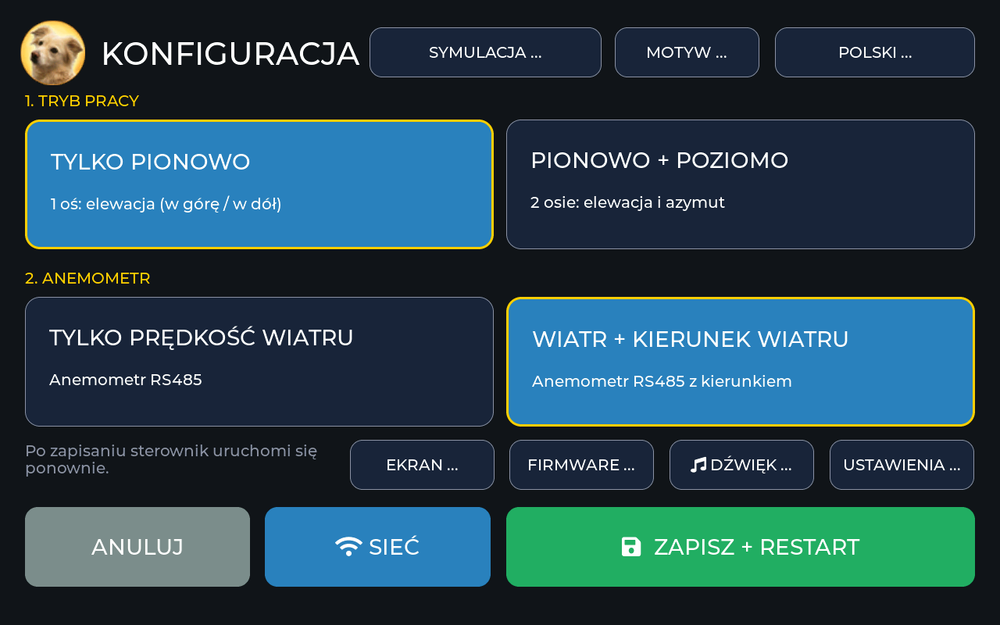
- Wybierz tryb pracyTYLKO PIONOWO (1 oś: elewacja) lub PIONOWO + POZIOMO (2 osie: elewacja i azymut). Fabrycznie nic nie jest wybrane. Wynik: Wybrany przycisk jest niebieski z żółtą ramką.
- Wybierz anemometrTYLKO PRĘDKOŚĆ WIATRU lub WIATR + KIERUNEK WIATRU. Oba to anemometry z wyjściem RS485 (Modbus-RTU); inne wyjścia (impulsowe, 0–10 V, 4–20 mA) nie są obsługiwane. Wynik: Przycisk jest zaznaczony.
- Dotknij ZAPISZ + RESTARTPrzycisk działa dopiero wtedy, gdy wybrano obie rzeczy. Wynik: Wszystkie wyjścia się wyłączają, sterownik uruchamia się ponownie, a potem otwiera się kreator konfiguracji.
1 oś tylko pionowo
Wyjścia azymutu pozostają zawsze otwarte. Na wyświetlaczu nie ma przycisków WSCHÓD i ZACHÓD; zamiast tego jest karta NACHYLENIE ze stałymi kątami (0°, 30°, 60° i dwa kąty zadane). Z czujnika słońca liczy się tylko północ względem południa.
2 osie pionowo + poziomo
Obie osie są śledzone, zawsze jedna po drugiej. Na wyświetlaczu są STROMIEJ, PŁASKIEJ, WSCHÓD i ZACHÓD. Czujnik słońca jest oceniany ze wszystkich czterech stron. Karty NACHYLENIE ze stałymi kątami nie ma.
Dla Samba-Solar-Rack przewidziane są dwa osobne czujniki na tej samej magistrali: prędkość wiatru (adres 3) i kierunek wiatru (adres 4), czyli WIATR + KIERUNEK WIATRU. Kierunek wiatru jest tylko wyświetlany i zapisywany w logu; nie wpływa ani na śledzenie, ani na ochronę przed burzą. Kto ma tylko miernik prędkości, wybiera TYLKO PRĘDKOŚĆ WIATRU.
Tryb pracy i anemometr możesz zmienić w każdej chwili. Nowe ustawienia obowiązują dopiero po ZAPISZ + RESTART; do tego czasu sterownik pracuje z dotychczasowymi. ANULUJ odrzuca wybór. Jeśli zmieniłeś tryb pracy, sprawdź potem instalację od nowa: KREATOR KONFIGURACJI → SPRAWDŹ WSZYSTKO PONOWNIE (rozdział 5.4).
4.3 Pozostałe przyciski konfiguracji
| Przycisk | Do czego | Obowiązuje | Obowiązkowe? |
|---|---|---|---|
| SIEĆ | Wi-Fi, hotspot, godzina, dostęp zdalny (4.4) | po ZAPISZ + RESTART | opcjonalnie, potrzebne dla godziny |
| MOTYW … | Kolory interfejsu (4.6) | od razu | opcjonalnie |
| DŹWIĘK … | Dźwięki potwierdzenia, głośność (4.7) | od razu | opcjonalnie |
| EKRAN … | Spoczynek, czujnik ruchu, akumulator (4.8) | od razu | opcjonalnie |
| FIRMWARE … | sprawdzanie i instalowanie nowego firmware (4.9) | po potwierdzeniu | opcjonalnie |
| USTAWIENIA … | wszystkie ustawiane wartości, kreator konfiguracji (rozdział 7); dopiero po zapisaniu konfiguracji | zależnie od wartości | – |
| SYMULACJA … | Testowanie bez płytki RearCircuitBoard_10 (4.10) | po potwierdzeniu i restarcie | tylko do wypróbowania |
| POLSKI … (nazwa języka) | Wybór języka (4.1) | od razu | – |
4.4 Sieć: Wi-Fi, hotspot i godzina opcjonalnie
Wi-Fi jest fabrycznie wyłączone. Sterownik nigdy go nie potrzebuje: śledzenie i ochrona przed burzą działają bez sieci tak samo. Z Wi-Fi dostajesz jednak dokładną godzinę (wtedy urządzenie zna wschód i zachód słońca), interfejs WWW na telefon i komputer oraz sprawdzanie nowego firmware.
Płyta nie ma własnego zegara z podtrzymaniem bateryjnym. Godzina przychodzi tylko przez Wi-Fi z serwera czasu. Bez Wi-Fi urządzenie rozpoznaje noc po jasności (rozdział 6).
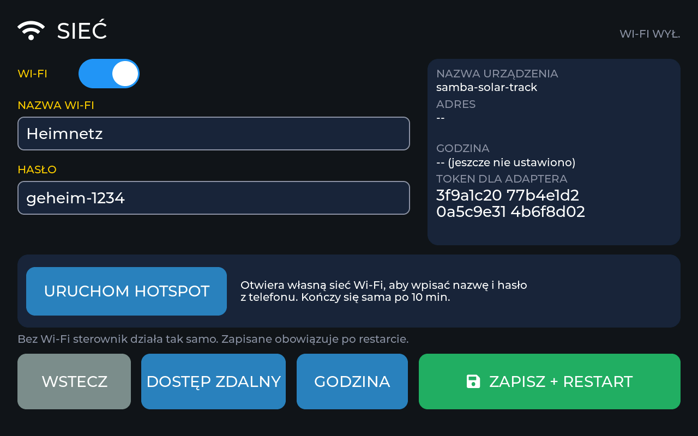
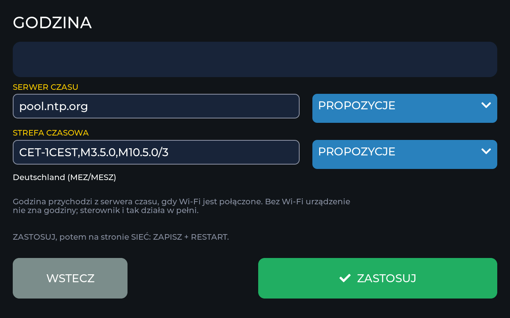
Sposób A: wpisanie na wyświetlaczu
- Konfiguracja → SIEĆWynik: Pojawia się ekran SIEĆ, w prawym górnym rogu „WI-FI WYŁ.”.
- Włącz Wi-FiDotknij przełącznika Wi-Fi. Wynik: Przełącznik jest niebieski.
- Wpisz nazwę Wi-Fi i hasłoDotknij pola, pisz klawiaturą ekranową, potwierdź haczykiem. Nazwa ma od 1 do 32 znaków, hasło jest puste lub ma od 8 do 63 znaków. Klawiatura nie zna znaków diakrytycznych; dla takich nazw użyj sposobu B. Wynik: Nazwa i hasło są w polach.
- Sprawdź godzinęPrzycisk GODZINA. Ustawienie domyślne: serwer czasu
pool.ntp.org, strefa czasowa Niemcy (CET/CEST). Jeśli mieszkasz w innej strefie czasowej, wybierz ją w PROPOZYCJE i dotknij ZASTOSUJ. Wynik: Wracasz do ekranu SIEĆ. - ZAPISZ + RESTARTWynik: Wszystkie wyjścia się wyłączają, urządzenie uruchamia się ponownie i łączy się. W pasku nagłówka pojawia się symbol Wi-Fi: biały = połączono, żółty = brak połączenia. Chwilę później obok niego, po lewej, widnieje godzina.
Sposób B: przez hotspot konfiguracyjny (telefonem)
- SIEĆ → URUCHOM HOTSPOTWynik: Urządzenie otwiera własną sieć Wi-Fi „Samba-Setup-” z czterema znakami. Nazwa i hasło są na wyświetlaczu; hasło przy każdym uruchomieniu jest inne.
- Połącz telefon z tą siecią Wi-Fi i otwórz w przeglądarce
http://192.168.4.1Wynik: Pojawia się strona konfiguracji (obraz po prawej) z listą znalezionych sieci Wi-Fi. - Wybierz Wi-Fi, wpisz hasło i nazwę urządzenia, zapiszNazwa urządzenia składa się z a–z, 0–9 i łącznika, fabrycznie
samba-solar-track. Wynik: Urządzenie po 1,5 s uruchamia się ponownie i łączy z twoją siecią Wi-Fi.

Hotspot kończy się sam po 10 minutach. Dopóki działa, połączenie z Wi-Fi jest wstrzymane.
Pod adresem, który pokazuje ekran SIEĆ, albo pod http://samba-solar-track.local (lub pod nadaną przez ciebie nazwą urządzenia). Jeśli połączenie się nie udaje, urządzenie próbuje ponownie co 30 sekund, bez końca.
4.5 Dostęp zdalny: logowanie telefonu, blokada zdalnego sterowania opcjonalnie
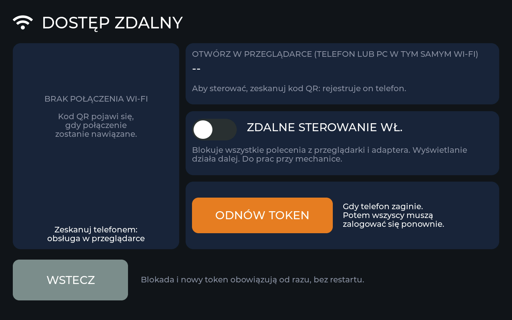
- Kod QR: pojawia się, gdy tylko Wi-Fi jest połączone. Zeskanuj go telefonem; przeglądarka otwiera interfejs WWW i jest zalogowana. Bez zalogowania przeglądarka może tylko oglądać.
- Token: tajny klucz z 32 znaków, który urządzenie samo tworzy. Na komputerze wpisujesz go w interfejsie WWW w WPISZ TOKEN; ekran SIEĆ pokazuje go w czterech blokach.
- ZDALNE STEROWANIE: gdy jest zablokowane, urządzenie nie przyjmuje zdalnie żadnego polecenia ani zmiany; wskazania działają dalej. Zablokuj, gdy ktoś pracuje przy mechanice. Obowiązuje od razu.
- ODNÓW TOKEN: gdy zgubiono telefon. Z potwierdzeniem; potem wszyscy muszą zalogować się od nowa. Obowiązuje od razu.
4.6 Motyw opcjonalnie
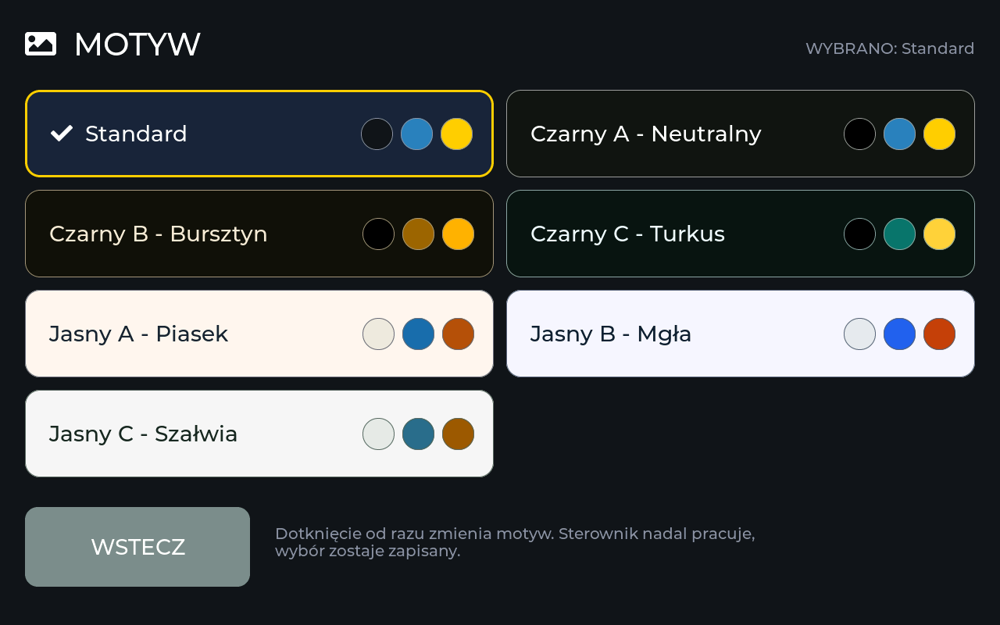
Dotknięcie od razu zmienia motyw, na wyświetlaczu i w interfejsie WWW. Sterownik przy tym pracuje dalej.
4.7 Dźwięk opcjonalnie
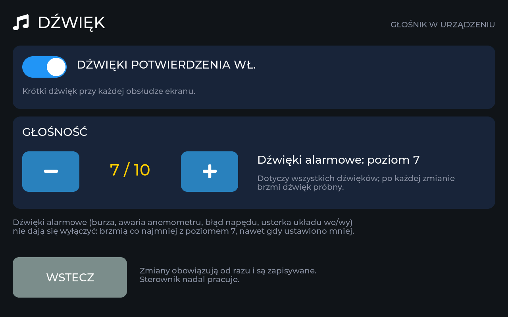
| Ustawienie | Ustawienie domyślne | Możliwe | Uwaga |
|---|---|---|---|
| Dźwięki potwierdzenia | wł. | wł. / wył. | krótki dźwięk przy każdej obsłudze wyświetlacza |
| Głośność | 7 z 10 | 1 do 10 | po każdej zmianie brzmi dźwięk próbny |
| Dźwięki alarmowe | wł. | tylko ciszej, nigdy wył. | przy burzy, awarii anemometru, błędzie napędu i usterce układu; zawsze brzmią co najmniej z poziomem 7 |
Zmiany obowiązują od razu i pozostają zapisane. Dźwięk można ustawić tylko na wyświetlaczu.
4.8 Ekran: spoczynek, czujnik ruchu, akumulator opcjonalnie


| Ustawienie | Ustawienie domyślne | Możliwe |
|---|---|---|
| Po czasie oczekiwania | WYGASZACZ EKRANU | ZAWSZE WŁ. · WYGASZACZ EKRANU · EKRAN WYŁ. |
| Czas oczekiwania | 5 min | 1 do 60 min (przyciski − i +) |
| Czujnik ruchu | wł. | wł. / wył. |
| Akumulator wbudowany | tak | tak / nie (pokazuje poziom naładowania w prawym górnym rogu pulpitu) |
Ruch przed wyświetlaczem lub dotyk go budzi; budzący dotyk nie wywołuje żadnej obsługi. Przy burzy, awarii anemometru, błędzie napędu i usterce układu wyświetlacz włącza się sam. Obraz wbudowanej kamery jest analizowany tylko w urządzeniu, nigdy nie jest zapisywany, wyświetlany ani przesyłany.
Na ekranie EKRAN pod przełącznikiem jest wiersz z „ruch …”. Pomachaj przed wyświetlaczem: liczba musi rosnąć. Jeśli jest za ciemno, widnieje tam „za ciemno”.
4.9 Firmware opcjonalnie
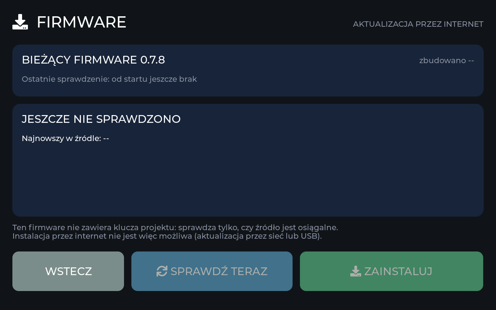
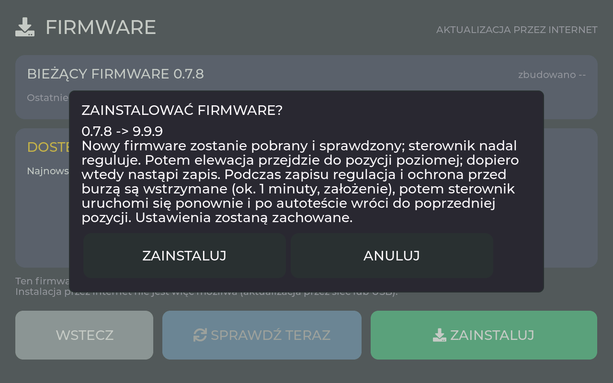
Z Wi-Fi urządzenie raz dziennie sprawdza, czy jest nowszy firmware. Instalacja nigdy nie odbywa się sama, tylko wtedy, gdy dotkniesz ZAINSTALUJ i potwierdzisz pytanie. Przed zapisem elewacja jedzie do poziomu; podczas zapisu regulacja i ochrona przed burzą na chwilę są wstrzymane. Potem urządzenie uruchamia się ponownie i samo się sprawdza; jeśli to się nie uda, wraca do dotychczasowego firmware. Zapisane ustawienia pozostają zachowane.
4.10 Symulacja: wypróbowanie bez płytki
Symulacja pozwala wypróbować obsługę bez płytki RearCircuitBoard_10, bez napędów i bez czujników, na przykład przy biurku. Włączyć ją można tylko wtedy, gdy płytka nie jest nasadzona, i wymaga to potwierdzenia. Wyświetlacz pokazuje symulację na stałe. Jeśli płytka jest nasadzona przy starcie, zapisana symulacja wyłącza się sama. Także kreator konfiguracji można przejść w symulacji; jego raport z testu jest wtedy oznaczony jako „SYMULACJA”.
Kreator konfiguracji zakończony tylko w symulacji nie obowiązuje na prawdziwym racku. Gdy urządzenie uruchamia się po raz pierwszy z nasadzoną płytką, kreator konfiguracji sam zaczyna znów od kroku 1. Dopóki nie zostanie zaliczony na prawdziwym racku, automatyka pozostaje zablokowana (fioletowy pasek „KREATOR KONFIGURACJI NIEUKOŃCZONY”); ochrona przed burzą i parkowanie działają dalej. Nie musisz w tym celu nic robić poza przejściem kreatora konfiguracji na racku (rozdział 5).
5Kreator konfiguracji
Kreator konfiguracji jednorazowo sprawdza na gotowym racku wszystko, co ważne dla bezpiecznej pracy: płytkę, anemometr, kierunki ruchu, drogi ruchu, czujnik słońca i automatykę. Gdzie musi ocenić człowiek, pyta. Gdzie urządzenie może zmierzyć samo, mierzy. Dopiero gdy wszystkie kroki obowiązkowe są zaliczone, instalacja sama śledzi słońce.
Kreator konfiguracji jest zrealizowany w firmware 0.7.0 i sprawdzony testami automatycznymi oraz w symulacji, ale jeszcze nigdy nie działał na prawdziwym racku. Wartości granicznych dla czasów ruchu, impulsów Halla i kątów jeszcze nie ma (decyzja E-S3): „zaliczone” oznacza, że położenie krańcowe zostało osiągnięte lub potwierdzone przez ciebie; zmierzone wartości trafiają do raportu z testu.
5.1 Zanim zaczniesz
- Słaby wiatr. Przy burzy każdy test ruchu zostaje przerwany, a rack jedzie do poziomu.
- Światło dzienne lub jasna lampa. Czujnik słońca i próba potrzebują światła (co najmniej próg dnia, fabrycznie suma 6000).
- Dwie osoby są lepsze niż jedna. Jedna stoi przy wyświetlaczu, druga patrzy na rack. Jeśli wyświetlacz stoi daleko, weź telefon do porozumiewania się.
- Wolny widok na rack i na anemometr; drabina do anemometru, jeśli jest zamontowany wysoko (wchodź na rack tylko przy wyłączonym zasilaczu przy racku, jeśli wchodzisz przy tym w obszar obrotu).
- Telefon z aplikacją do pomiaru nachylenia (poziomica) do kroku „Ruch do kąta” 1 oś i kompas (także jako aplikacja) do lokalizacji.
Jak się otwiera
- Po zapisaniu konfiguracji otwiera się sam.
- Jeśli go opuścisz (DOKOŃCZ PÓŹNIEJ), pulpit pokazuje na dole fioletowy pasek „KREATOR KONFIGURACJI NIEUKOŃCZONY: AUTOMATYKA ZABLOKOWANA - DOTKNIJ TUTAJ”. Dotknięcie otwiera go znowu w tym samym miejscu.
- Poza tym przez koło zębate → USTAWIENIA → URUCHOMIENIE → zielony wiersz KREATOR KONFIGURACJI (SPRAWDŹ WSZYSTKO).
- Stan pozostaje zapisany, także po restarcie lub zaniku zasilania.
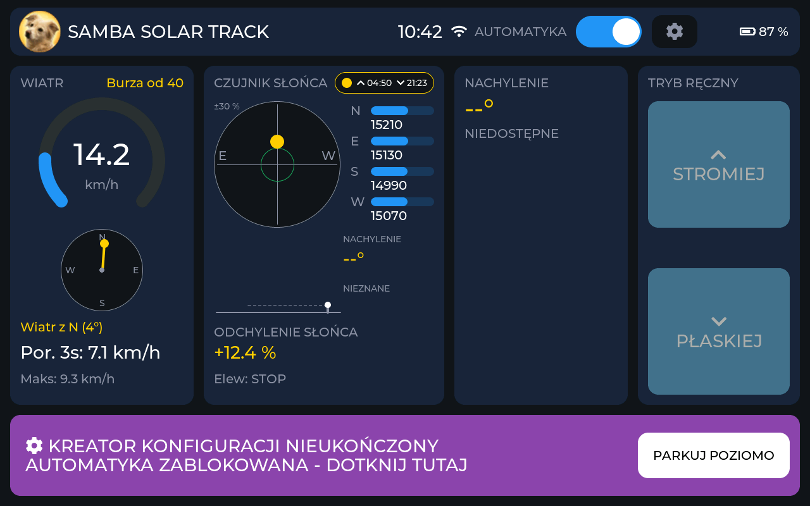
Przyciski na dole
| Przycisk | Co robi |
|---|---|
| DOKOŃCZ PÓŹNIEJ | Opuszcza kreator konfiguracji. Każdy ruch się zatrzymuje, stan pozostaje. Automatyka pozostaje zablokowana. |
| KROK WSTECZ | Przechodzi do poprzedniego kroku (nie w pierwszym kroku i nie po zakończeniu). |
| POMIŃ | Tylko przy krokach opcjonalnych: Wi-Fi i godzina, lokalizacja, lampki/dźwięk/czujnik ruchu. Kroków ruchu i bezpieczeństwa nigdy nie da się pominąć. |
| STOP (czerwony) | Pojawia się przy każdym ruchu. Zatrzymuje natychmiast. |
| POWTÓRZ | Po przerwaniu lub korekcie: wykonaj krok jeszcze raz. |
Wyłączniki krańcowe, maks. czas pracy, czas martwy i cykl pracy działają także w kreatorze konfiguracji. Napędy mimo to nie zatrzymają się, jeśli między nimi jest ręka. Nikogo w obszarze obrotu, także żadnych zwierząt. Jeśli nadejdzie burza, krok zostaje przerwany, a rack jedzie do poziomu (obraz poniżej).
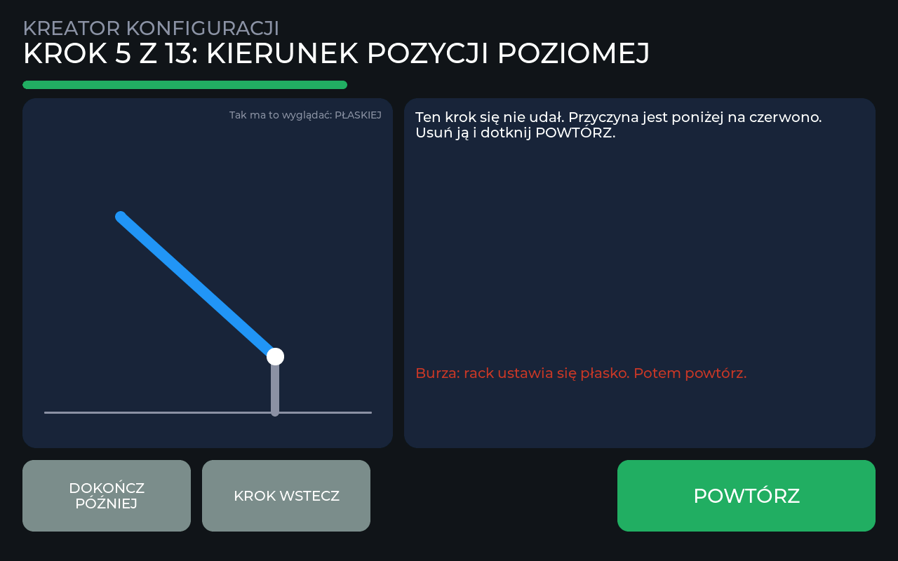
5.2 Przegląd kroków
| Nr | Krok | 1 oś | 2 osie | Porusza rackiem? |
|---|---|---|---|---|
| 1 | Bezpieczeństwo | ✓ | ✓ | nie |
| 2 | Dane instalacji | ✓ | ✓ | nie |
| 3 | Płytka i zasilanie | ✓ | ✓ | nie |
| 4 | Anemometr | ✓ | ✓ | nie |
| 5 | Kierunek pozycji poziomej | ✓ | ✓ | tak: krótko, potem całkiem poziomo |
| 6 | Zakres nachylenia | KALIBRACJA CZASU RUCHU | całkiem stromo i z powrotem | tak: cała droga |
| 7 | Obrót wschód – zachód | – | ✓ | tak: cała droga |
| (+1) | Reset sterownika synchronicznego | tylko jeśli w „Dane instalacji” wybrano przyłącze resetu | tak: całkiem poziomo | |
| 7 | Ruch do kąta | ✓ | – | tak: na 30° |
| 8 | Czujnik słońca | południe, północ | wschód, zachód, południe, północ | nie |
| 9 | Wi-Fi i godzina opcjonalnie | ✓ | ✓ | nie |
| 10 | Lokalizacja opcjonalnie | z orientacją | bez orientacji | nie |
| 11 | Lampki, dźwięk, czujnik ruchu opcjonalnie | ✓ | ✓ | nie |
| 12 | Próba automatyki | Nachylenie | nachylenie, potem obrót | tak: kawałek |
| 13 | Gotowe | ✓ | ✓ | nie |
Oba tryby pracy mają 13 kroków: przy 2 osiach dochodzi „Obrót wschód – zachód”, przy 1 osi „Ruch do kąta”. Jeśli ustawiony jest reset sterownika synchronicznego (na przykład przy Samba-Solar-Rack z BST-KZQ-15A-2), kroków jest 14, a od tego kroku numery przesuwają się o jeden. Nagłówek zawsze pokazuje „KROK n Z m”.
5.3 Krok po kroku
1Bezpieczeństwo obie
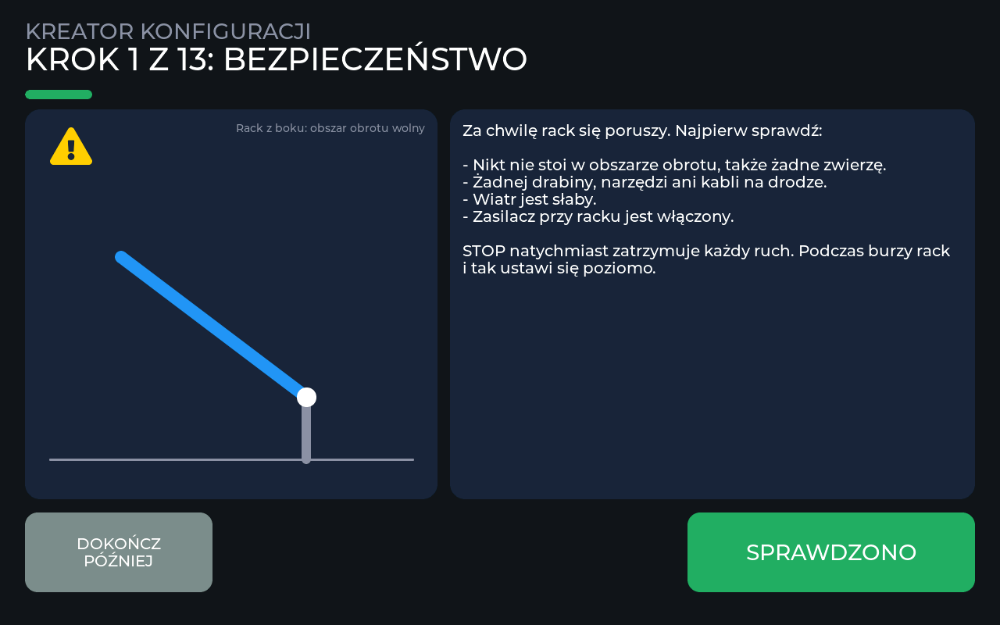
„Za chwilę rack się poruszy. Najpierw sprawdź” z czterema punktami i przyciskiem SPRAWDZONO.
- Nikogo w obszarze obrotu, także żadnych zwierząt.
- Żadnej drabiny, narzędzi ani kabli na drodze.
- Wiatr jest słaby.
- Zasilacz przy racku jest włączony.
Potem SPRAWDZONO.
Pojawia się krok 2.
Najpierw wszystko doprowadź do porządku. Tego kroku nie da się pominąć.
2Dane instalacji obie
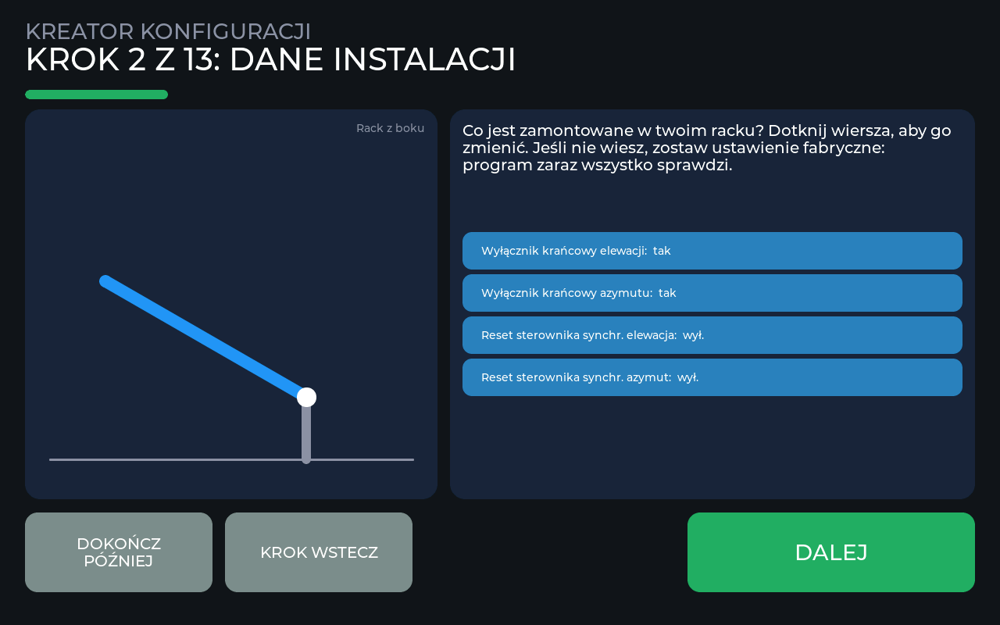
Niebieskie wiersze z tym, co jest zamontowane w twoim racku, każdy z aktualną wartością.
Dotykaj każdego wiersza, aż pojawi się właściwa wartość (każde dotknięcie przełącza dalej). Co oznaczają wartości i co jest właściwe dla twojego racka: wyłączniki krańcowe, odczyt Halla, stelaż, reset. Potem DALEJ.
Wiersze pokazują twoje wartości. Pojawia się krok 3.
Jeśli nie wiesz, zostaw ustawienie domyślne. Kolejne kroki to sprawdzą.
Samba-Solar-Rack 2.0-E Plus
Wyłącznik krańcowy elewacji: nie · odczyt Halla: tak, jeśli zamontowany jest HallTapBoard · stelaż: G2 · reset sterownika synchr. elewacja: J23 (płytka od projektu 0.12, sterownik synchroniczny BST-KZQ-15A-2).
Inny rack
Wyłączniki krańcowe: tak tylko wtedy, gdy własne wyłączniki krańcowe na końcu drogi ruchu są podłączone do płytki. Stelaż: liniowo. Reset: wył., chyba że twój sterownik synchroniczny ma wejście reset i jest ono podłączone.
3Płytka i zasilanie obie
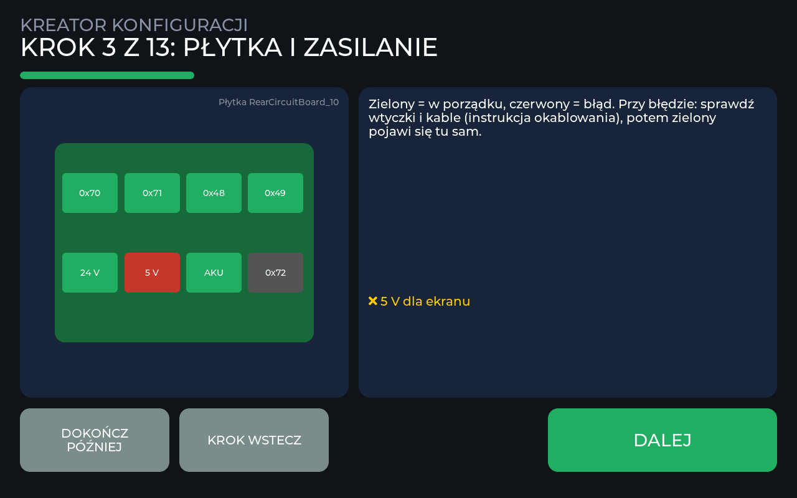
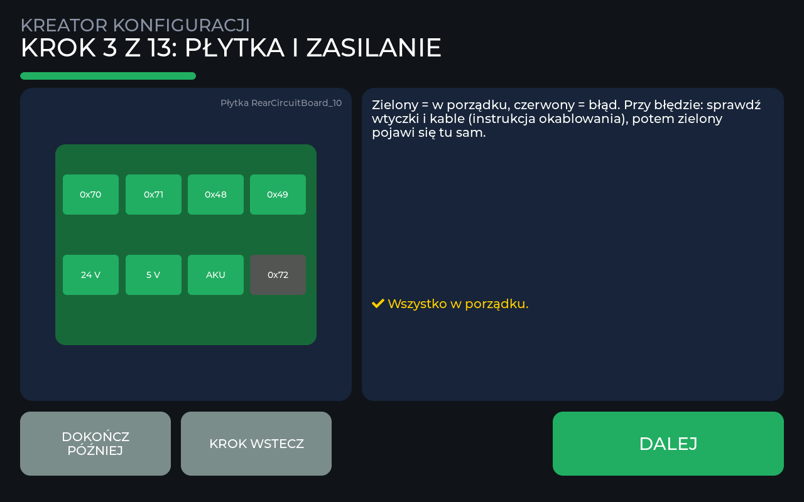
Najpierw objaśnienie z przyciskiem SPRAWDŹ, potem obraz płytki z ośmioma polami.
Dotknij SPRAWDŹ, chwilę poczekaj.
Wszystkie pola zielone lub szare, po prawej „Wszystko w porządku”. Potem DALEJ.
Czerwone pole: sprawdź wtyki i kable (instrukcja okablowania, tylko po niemiecku). Pole samo zmienia się na zielone, gdy tylko błąd zniknie. Dopiero wtedy działa DALEJ.
| Pole | Co jest sprawdzane | Czerwone oznacza |
|---|---|---|
| 0x70 | Układ wyjść przełączających i wyłączników krańcowych | płytka nie jest prawidłowo nasadzona lub ma usterkę; bez tego układu nic nie jedzie |
| 0x71 | Układ lampek sygnalizacyjnych | usterka lampek i nadzoru zasilania |
| 0x48 | Pomiar czujnika słońca | usterka układu lub przeciążenie zasilania czujnika słońca (zwarcie w kablu?) |
| 0x49 | Pomiar zasilania | drugi układ pomiarowy nie odpowiada |
| 24 V | 24 V z zasilacza | zasilacz sterownika wyłączony lub bezpiecznik |
| 5 V | 5 V dla ekranu | przetwornica napięcia płytki nie dostarcza napięcia |
| AKU | Blokada ładowania akumulatora i zasilanie czujnika | blokada ładowania niewiarygodna (zob. instrukcja budowy i obsługi, rozdział 7) |
| 0x72 | Układ styków resetu (zacisk J23) | szare, jeśli nie wybrano resetu na J23; czerwone, jeśli jest wybrany, ale nie odpowiada (płytka sprzed projektu 0.12?) |
4Anemometr obie
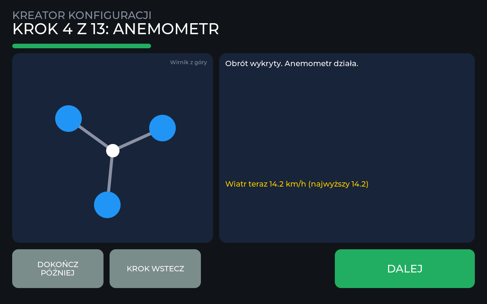
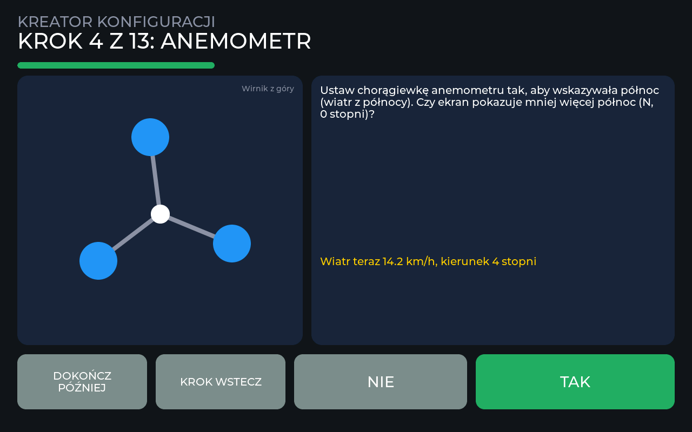
Wirnik z góry; na dole po prawej na żółto „Wiatr teraz … km/h (najwyższy …)”.
- Dotknij START.
- Mocno obróć wirnik ręką.
- DALEJ.
- Tylko z kierunkiem wiatru: ustaw chorągiewkę na północ i sprawdź, czy wyświetlacz pokazuje ok. N (0°); TAK lub NIE.
Przy obracaniu wskazanie rośnie o co najmniej 2 km/h, tekst zmienia się na „Obrót wykryty”. Kierunek pokazuje mniej więcej północ.
„Anemometr nie został jeszcze obrócony”: obróć mocniej. Brak liczby: anemometr nie odpowiada; sprawdź okablowanie i dane anemometru. Kierunek błędny (NIE): sprawdź montaż i znacznik północy anemometru, potem POWTÓRZ.
5Kierunek pozycji poziomej obie
Najważniejszy krok: określa, dokąd rack jedzie przy burzy (rozdział 3).
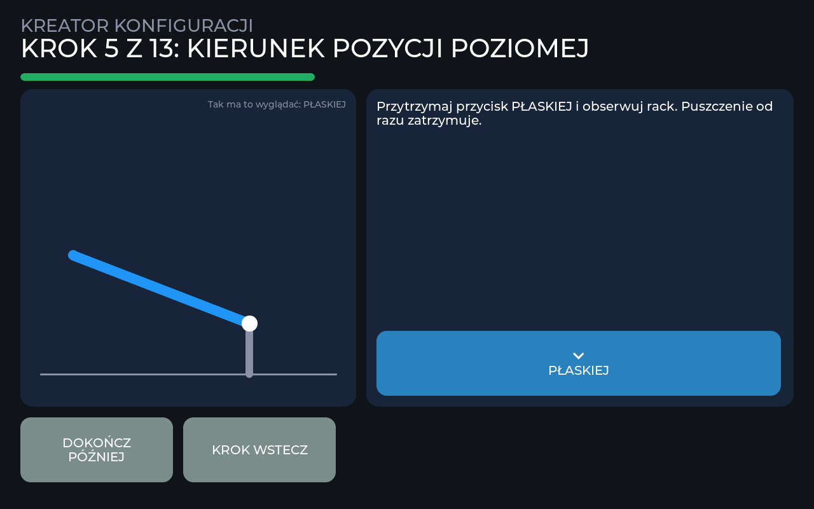
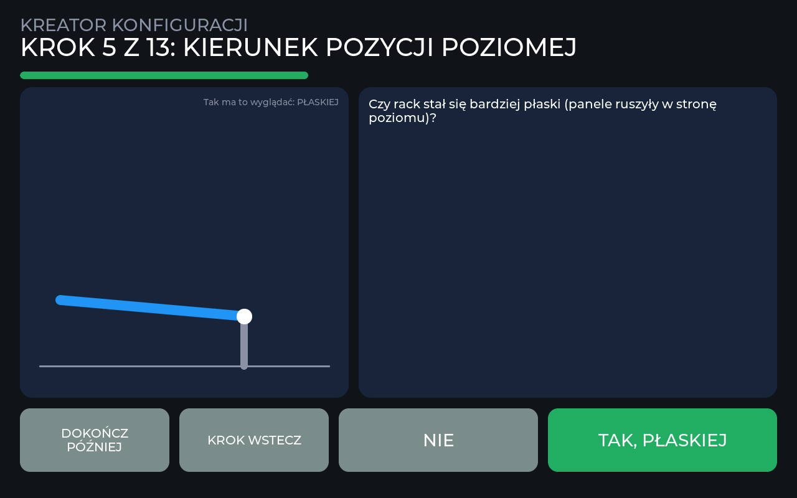
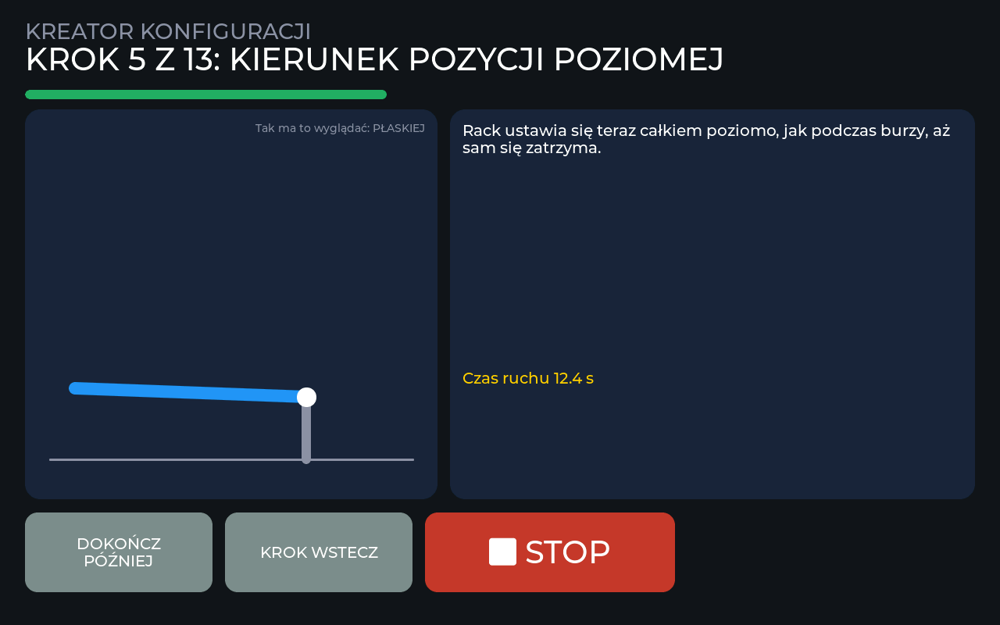
Po lewej szkic „Tak ma to wyglądać: PŁASKIEJ”, po prawej instrukcja i duży przycisk PŁASKIEJ.
- DALEJ.
- Przytrzymaj PŁASKIEJ i obserwuj rack. Puszczenie od razu zatrzymuje ruch; po 5 s rack zatrzymuje się sam.
- TAK, PŁASKIEJ, jeśli panele ruszyły w stronę poziomu, w przeciwnym razie NIE.
- Patrz, aż rack sam się zatrzyma.
Rack staje się bardziej płaski, a potem jedzie do położenia krańcowego. „Pozycja pozioma sprawdzona. Od teraz ochrona przed burzą bezpiecznie chroni rack.”
Przy NIE urządzenie samo zmienia kierunek (wartość „Pozycja pozioma w kierunku W GÓRĘ”): „Dobrze, że to sprawdzamy”, potem POWTÓRZ. Jeśli nic się nie poruszyło: sprawdź zasilacz przy racku, okablowanie styków, sterownik synchroniczny (tryb chwilowy?). Jeśli rack stoi już całkiem poziomo, urządzenie od razu pyta, czy stoi poziomo.
Jeśli „Wyłącznik krańcowy elewacji” jest ustawiony na nie, sterownik czeka cały maks. czas pracy, nawet gdy rack już stoi (położenie krańcowe wg czasu pracy). W Samba-Solar-Rack to 90 s. Z odczytem Halla ruch kończy się ok. 1 s po ustaniu impulsów.
6Zakres nachylenia
1 oś KALIBRACJA CZASU RUCHU
Urządzenie mierzy, ile czasu rack potrzebuje od całkiem poziomo do całkiem stromo i z powrotem. Dzięki temu zna później każdy kąt. Dotknij KALIBRACJA CZASU RUCHU; osobny ekran prowadzi przez cztery kroki (obrazy poniżej). Potem wracasz i dotykasz DALEJ.
2 osie całkiem stromo i z powrotem
START: rack jedzie całkiem stromo do oporu, potem całkiem poziomo do oporu. Urządzenie mierzy oba czasy. Potem pyta, czy rack przejechał całkiem stromo i z powrotem całkiem poziomo, nie zacinając się ani nie uderzając.
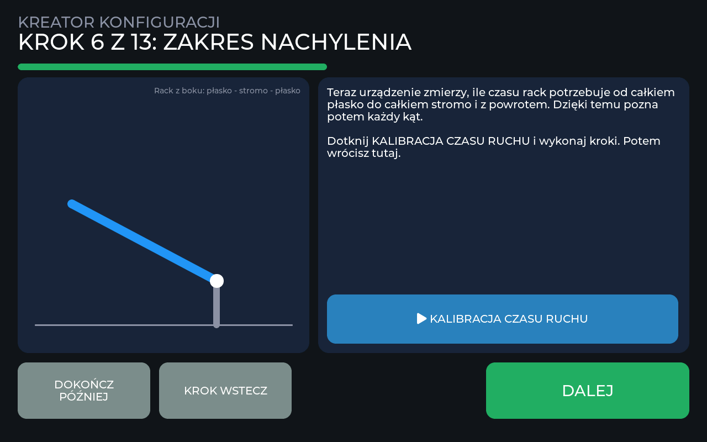
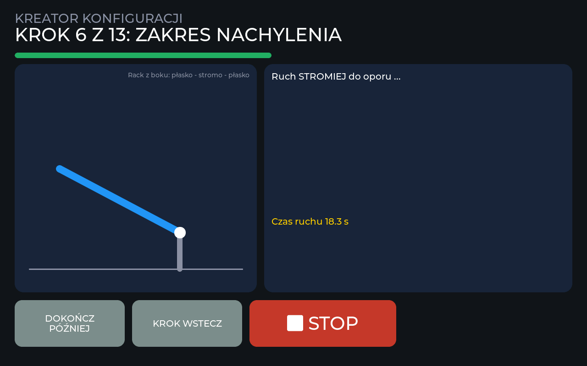
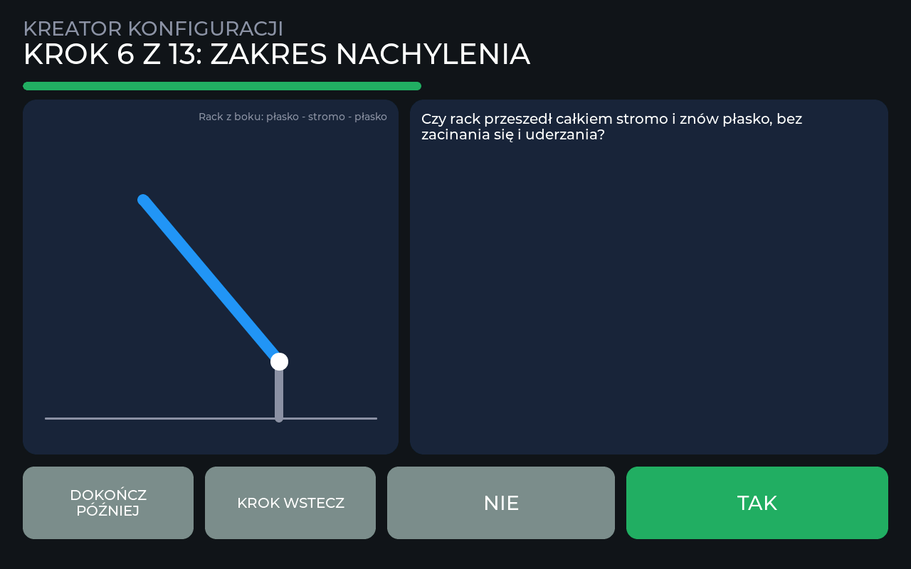
1 oś Cztery kroki funkcji KALIBRACJA CZASU RUCHU


1 oś przycisk KALIBRACJA CZASU RUCHU. 2 osie bieżący czas ruchu, potem pytanie.
1 oś przejdź KALIBRACJA CZASU RUCHU, ZASTOSUJ, wróć, DALEJ. 2 osie START, patrz, TAK lub NIE.
Rack osiąga oba położenia krańcowe bez zacinania i uderzania. 1 oś „Oba czasy są wiarygodne”: każdy co najmniej 10 s, krótszy niż 0,9 × maks. czas pracy, W GÓRĘ i W DÓŁ najwyżej w stosunku 1 : 2.
„Czas przejazdu nie jest jeszcze skalibrowany”: najpierw skalibruj. Przerwanie „MAKS. CZAS PRACY ZA KRÓTKI LUB NIE DOTKNIĘTO NA MIEJSCU”: zwiększ maks. czas pracy. NIE przy 2 osiach: sprawdź mechanikę i napęd (instrukcja montażu racka), potem POWTÓRZ.
Jeśli „Odczyt Halla obecny” jest ustawiony na tak, wiersz nazywa się „KALIBRACJA: CZAS RUCHU I IMPULSY HALLA”. Przejazdy pomiarowe kończą się wtedy same i zliczają impulsy Halla; wiarygodne są co najmniej 1000 impulsów w każdą stronę, a W GÓRĘ i W DÓŁ różnią się najwyżej o 3 %. Jeśli odrzucenie brzmi „HALL LICZY WSTECZ”, ustaw „Odwróć kierunek liczenia Halla” na tak.
7Obrót wschód – zachód 2 osie
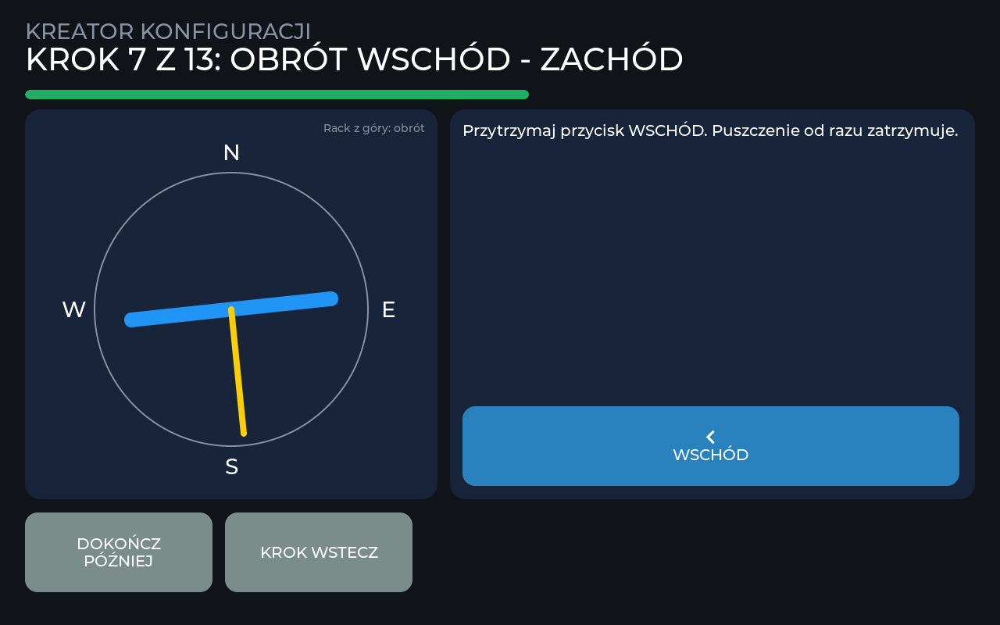
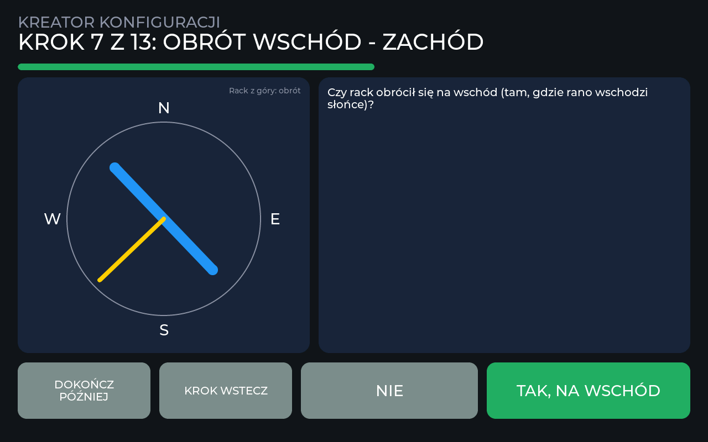
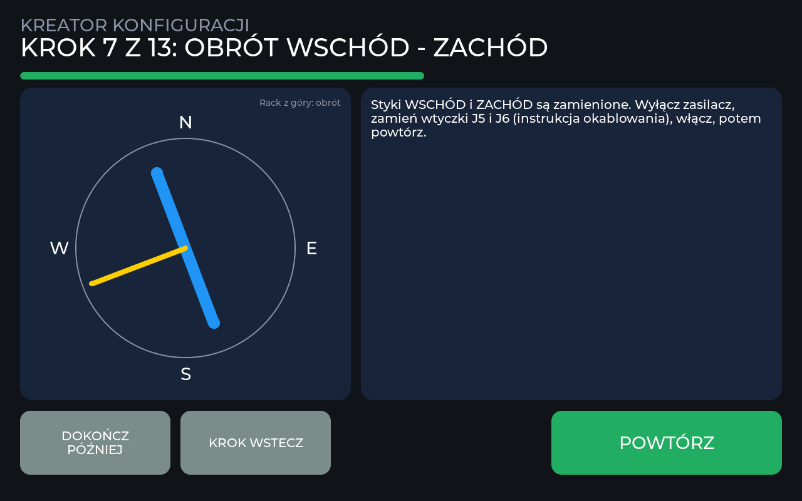
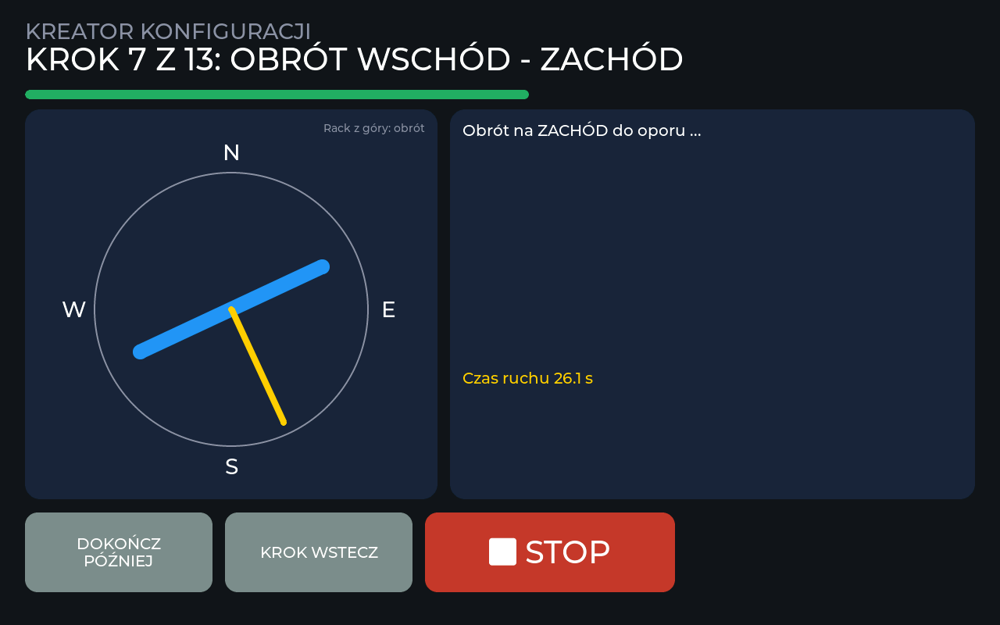
Po lewej widok z góry z kompasem (żółty: kierunek patrzenia), po prawej instrukcja i przycisk WSCHÓD.
- DALEJ, potem przytrzymaj WSCHÓD (najwyżej 5 s).
- TAK, NA WSCHÓD, jeśli rack obrócił się do porannego słońca.
- Patrz: rack obraca się całkiem na wschód, całkiem na zachód i z powrotem na wschód.
Wszystkie trzy ruchy dochodzą do oporu. „Obrót sprawdzony. Rack stoi w pozycji porannej.”
NIE: tego nie da się zmienić ustawieniem. Wyłącz zasilacz, zamień wtyki na J5 i J6 (instrukcja okablowania, tylko po niemiecku), włącz, POWTÓRZ. Brak ruchu: sprawdź zasilacz i okablowanie napędu azymutu.
+Reset sterownika synchronicznego tylko jeśli ustawiony
Ten krok istnieje tylko wtedy, gdy w kroku 2 wybrano przyłącze resetu. Następuje po kroku zakresu nachylenia (przy 2 osiach po obrocie). Nie ma jeszcze dla niego osobnego obrazu; przebieg pokazuje pasek na pulpicie, tak jak przy resecie przez USTAWIENIA.

„Sterownik synchroniczny napędów ma wejście reset. Za chwilę urządzenie je wyzwoli.” i przycisk WYZWÓL RESET.
WYZWÓL RESET, patrz. Przy 2 osiach z dwoma resetami oba przebiegają po kolei.
Sterownik synchroniczny całkowicie chowa napędy (w racku: poziomo). „Reset sprawdzony.”
„Reset niemożliwy (sprawdź podłączenie lub układ)”: nie rozpoczął się w ciągu 20 s; sprawdź zacisk J23 lub J5 i wartość reset. „Reset przerwany”: przyczyna jest na pasku stanu; potem POWTÓRZ.
Czas trwania impulsu resetu (5 s) i zachowanie sterownika synchronicznego po nim nie są jeszcze zmierzone na racku.
7Ruch do kąta 1 oś
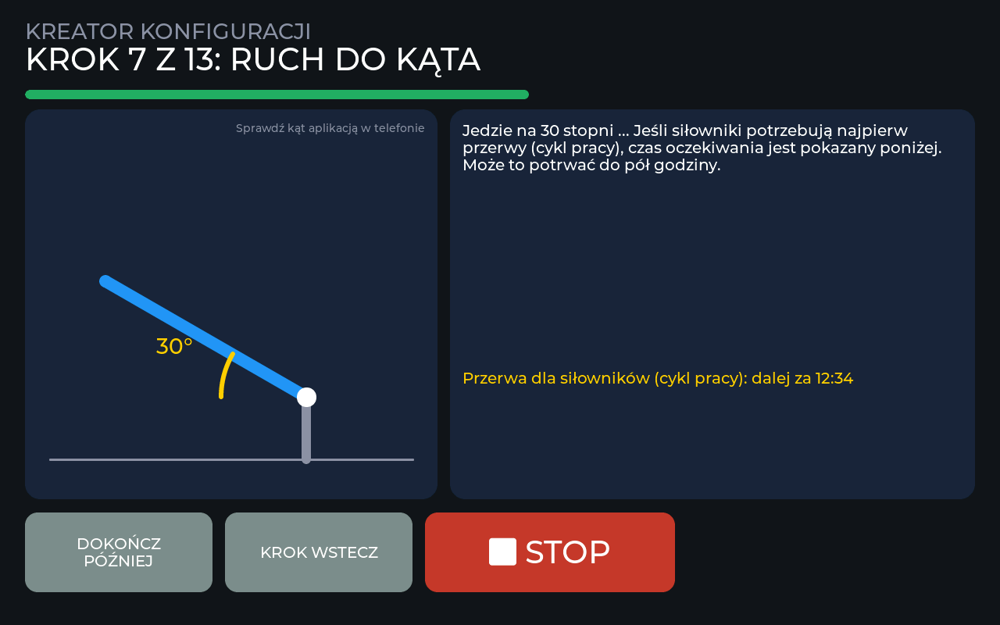
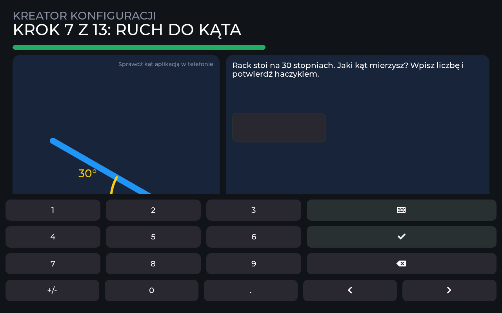
„Teraz rack ustawi się na 30 stopni.” i przycisk RUCH NA 30 STOPNI.
Dotknij przycisku, poczekaj. Potem połóż telefon płasko na panelu, odczytaj kąt, wpisz (0 do 90), haczyk.
Rack zatrzymuje się na ok. 30°. „Kąt zapisany. Jest w raporcie z testu.”
„Kąt nieosiągalny (czas przejazdu lub czujnik Halla)”: powtórz krok 6. Jeśli twoja wartość mocno odbiega: sprawdź stelaż. Granicy, od której krok kończy się niepowodzeniem, jeszcze nie ma.
8Czujnik słońca
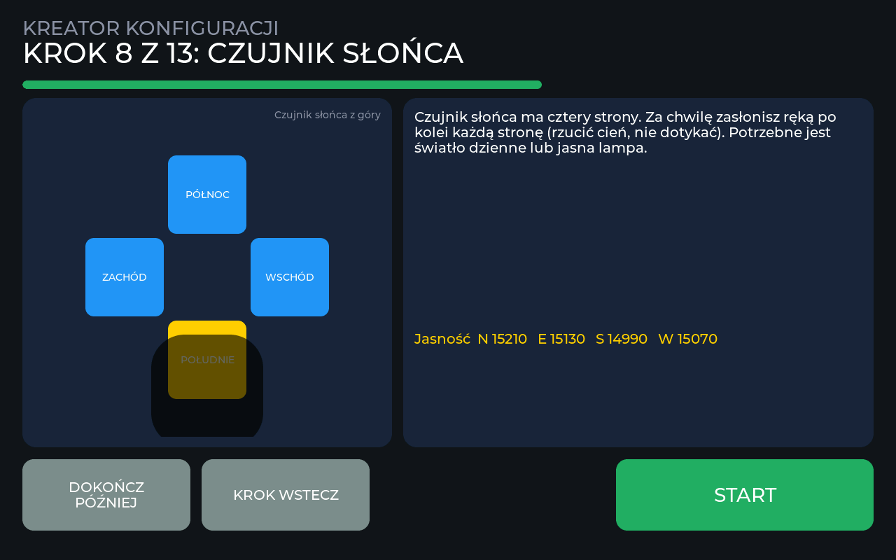
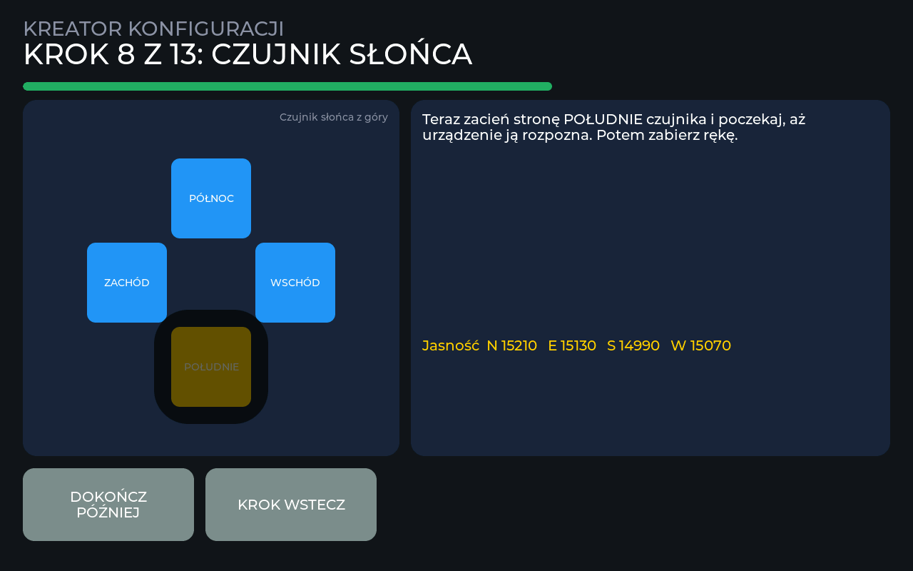
Czujnik z góry z czterema polami. Strona, którą masz zacienić, jest zaznaczona.
START. Potem zacień podaną stronę, poczekaj, aż urządzenie ją rozpozna, zabierz dłoń. 1 oś POŁUDNIE, potem PÓŁNOC. 2 osie WSCHÓD, ZACHÓD, POŁUDNIE, PÓŁNOC.
Każda strona robi się co najmniej 25 % ciemniejsza i jest rozpoznawana przez 1 s. „Wszystkie strony czujnika są prawidłowo przypisane.”
Jeśli urządzenie rozpozna inną stronę, samo koryguje przypisanie wejść i odnotowuje to w raporcie z testu. „Za ciemno”: powtórz przy świetle dziennym lub z jasną lampą. Nic nie zostaje rozpoznane: zrób większy cień, bliżej czujnika.
9Wi-Fi i godzina opcjonalnie
Objaśnienie, przycisk SIEĆ … i DALEJ.
SIEĆ … otwiera ekran z rozdziału 4.4. Po restarcie kreator konfiguracji otwiera się znów w tym miejscu. Albo POMIŃ.
„Czas jest ustawiony”, potem DALEJ.
„Brak godziny: skonfiguruj WiFi lub pomiń.” Bez Wi-Fi urządzenie rozpoznaje noc po jasności.
10Lokalizacja opcjonalnie
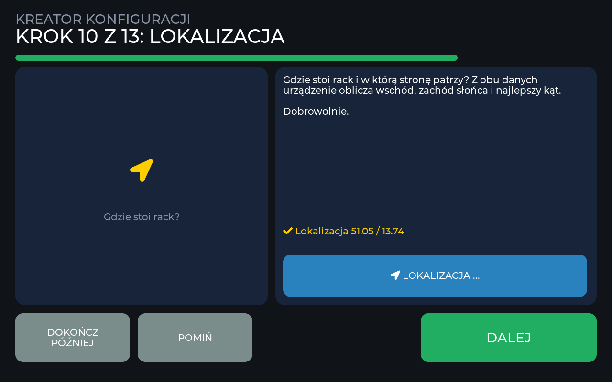
1 oś „Gdzie stoi rack i w którą stronę patrzy?” 2 osie „Gdzie stoi rack?” i przycisk LOKALIZACJA ….
LOKALIZACJA … otwiera mapę (rozdział 6.2); przy 1 osi potem także orientację. Albo POMIŃ.
Na dole „Lokalizacja …” z szerokością i długością, potem DALEJ.
„Brak lokalizacji: wpisz ją lub pomiń.”
11Lampki, dźwięk, czujnik ruchu opcjonalnie
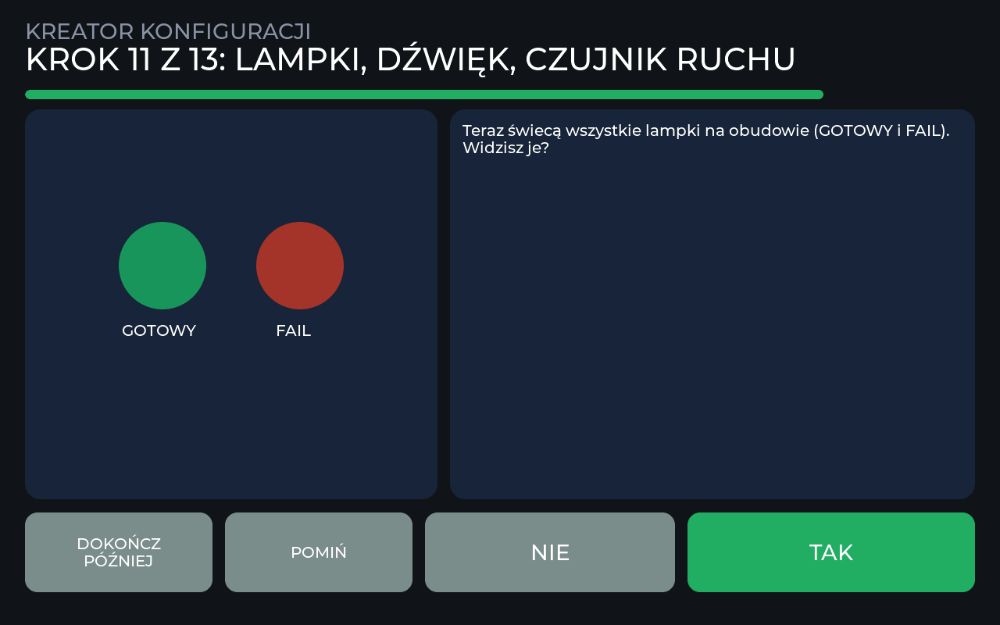
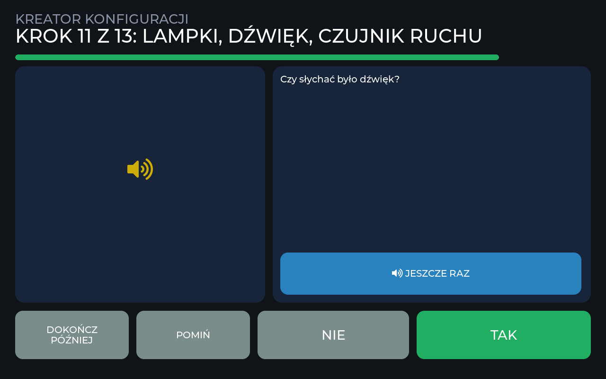
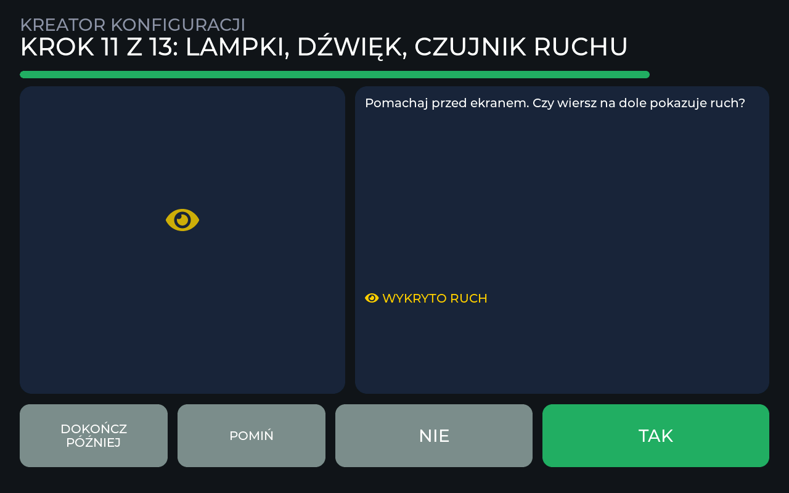
Trzy pytania po kolei: lampki, dźwięk, czujnik ruchu.
START, potem za każdym razem TAK lub NIE. Albo POMIŃ.
BEREIT i FAIL świecą na obudowie i na płytce; dźwięk jest słyszalny; przy machaniu widnieje „WYKRYTO RUCH”.
NIE zostaje odnotowane w raporcie z testu, krok mimo to idzie dalej. Lampki: sprawdź podłączenie lampek obudowy (instrukcja okablowania, tylko po niemiecku). Dźwięk: głośność. Ruch: czy przed wyświetlaczem jest dość światła?
12Próba automatyki
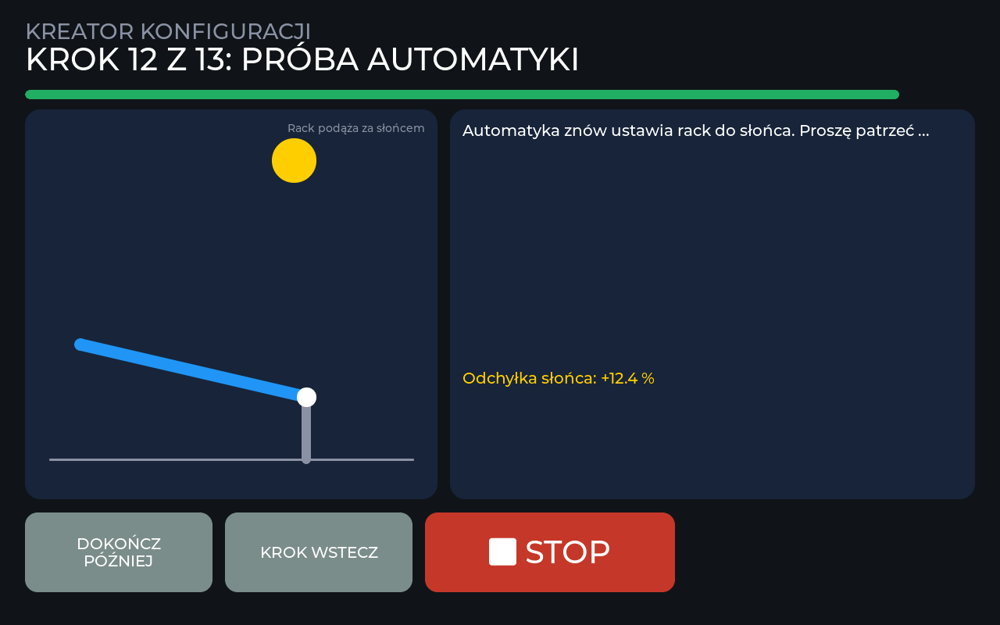
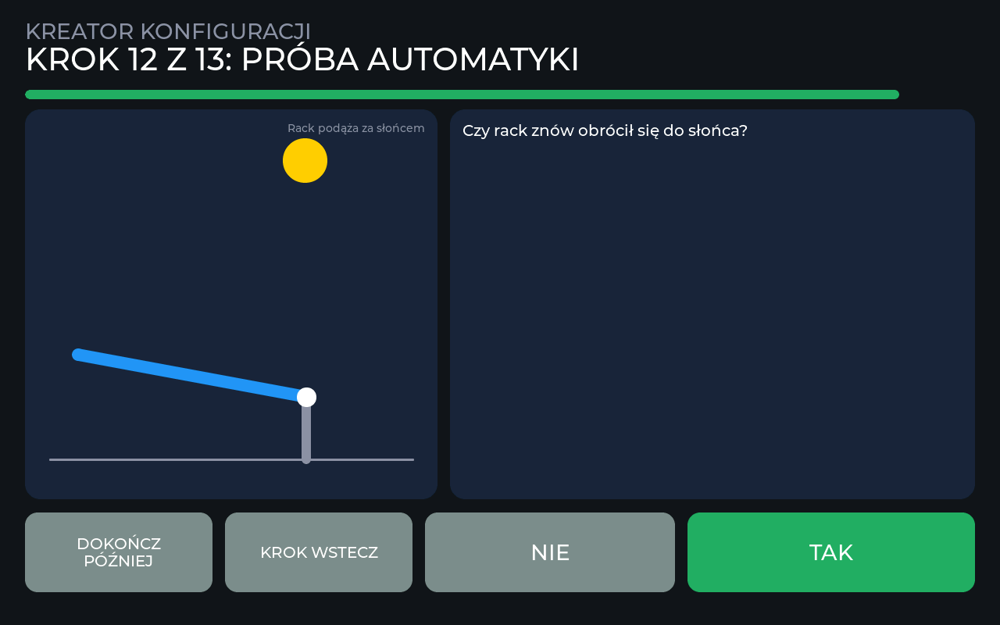
Objaśnienie, potem „Lekko przestawia rack …”, potem działająca automatyka z odchyleniem w procentach.
START, patrz, TAK lub NIE. 2 osie najpierw nachylenie, potem obrót.
Urządzenie przestawia oś przez ok. 4 s, potem automatyka wraca do słońca i się zatrzymuje. „Próba zaliczona.”
Jeśli automatyka odjeżdża od słońca, urządzenie samo zmienia kierunek („Kierunek został zmieniony. Proszę jeszcze raz.”): przy nachyleniu „Północ jaśniej oznacza W GÓRĘ”, przy obrocie zamienia wejścia wschód i zachód. „Automatyka nie ustawiła się. Czy jest dość słońca?”: po 3 min bez powodzenia; powtórz, gdy świeci słońce.
13Gotowe
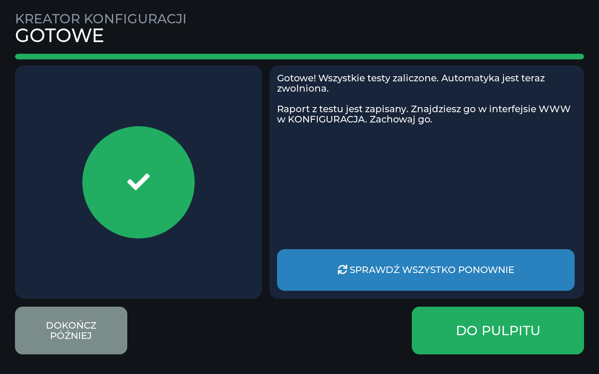
Zielony haczyk, DO PULPITU i przycisk SPRAWDŹ WSZYSTKO PONOWNIE.
DO PULPITU. Włącz przełącznik automatyki u góry, jeśli jest wyłączony.
Fioletowy pasek zniknął. Pasek stanu pokazuje automatykę (na przykład „AUTO: USTAWIONO”).
Brakuje jeszcze kroku obowiązkowego: „Tego kroku jeszcze brakuje.” Wróć do tego kroku.
5.4 Po zakończeniu
- Raport z testu: urządzenie zapisuje trzy ostatnie raporty. W interfejsie WWW w KONFIGURACJA → KREATOR KONFIGURACJI przycisk POKAŻ wyświetla raport jako zaprojektowany arkusz (jasny do drukarki, ciemny do pliku) z przyciskiem ZAPISZ JAKO PDF; TEKST pobiera go jako plik tekstowy (od firmware 0.7.6, starsze raporty tylko jako tekst). Raport zawiera datę, firmware, tryb pracy, anemometr, każdy krok z wynikiem i zmierzone wartości (czasy ruchu, impulsy Halla, odczytany kąt, przypisanie czujnika słońca, odpowiedzi dotyczące lampek, dźwięku i czujnika ruchu). Zachowaj go: pomaga przy późniejszych kontrolach i pytaniach.
- Pojedyncze wartości można nadal zmieniać w USTAWIENIA (rozdział 7); funkcję KALIBRACJA CZASU RUCHU można tam w każdej chwili powtórzyć 1 oś.
- Sprawdź wszystko ponownie: po wymianie części (napęd, czujnik, anemometr, płytka) lub po zmianie trybu pracy: USTAWIENIA → URUCHOMIENIE → KREATOR KONFIGURACJI (SPRAWDŹ WSZYSTKO) otwiera ekran „Gotowe”; tam SPRAWDŹ WSZYSTKO PONOWNIE, a w pytaniu ZACZNIJ OD NOWA. Kreator zaczyna od kroku 1. Dopóki wszystkie kroki nie zostaną ponownie zaliczone, automatyka jest zablokowana; ochrona przed burzą i parkowanie działają dalej. Dotychczasowy raport z testu pozostaje zapisany. Kreator konfiguracji zakończony tylko w symulacji sam zaczyna się na prawdziwym racku od nowa (4.10).
6Lokalizacja, orientacja, słońce i noc
Gdy urządzenie zna godzinę (przez Wi-Fi) i lokalizację, oblicza drogę słońca: wschód, zachód, wysokość i kierunek słońca. Dzięki temu punktualnie jedzie do pozycji nocnej. W dzień śledzenie nadal prowadzi czujnik słońca.
Obliczenie pozycji słońca jest przetestowane z wartościami porównawczymi biblioteki astronomicznej. Na urządzeniu z prawdziwą godziną i prawdziwym rackiem nie zostało jeszcze wypróbowane.
6.1 Strona SŁOŃCE
Na pulpicie w karcie CZUJNIK SŁOŃCA u góry jest małe żółte pole ze wschodem i zachodem, na przykład „↑ 04:50 ↓ 21:23”. Dotknięcie otwiera stronę SŁOŃCE. Przy otwieraniu słońce w krótkiej animacji przechodzi od wschodu do obecnego położenia.
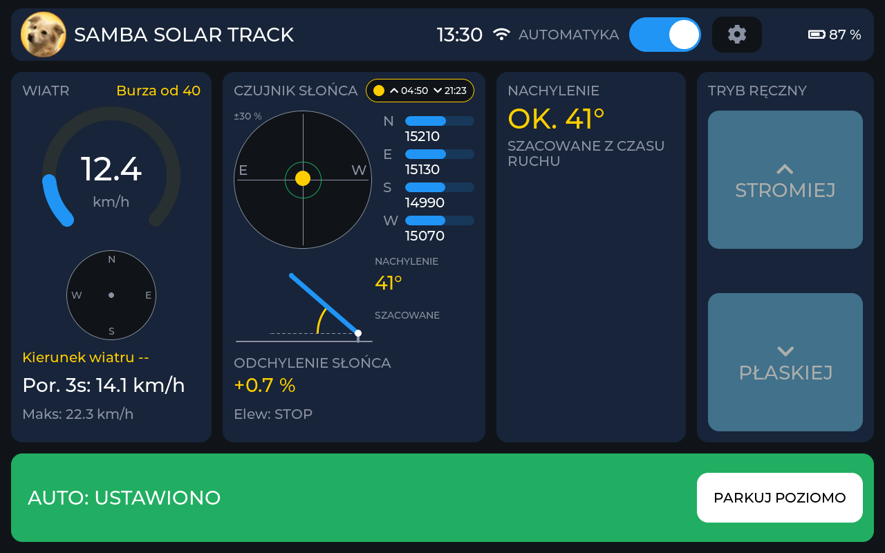
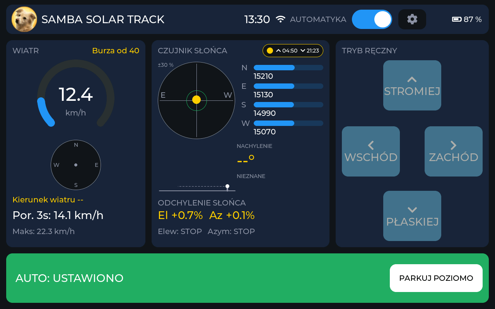
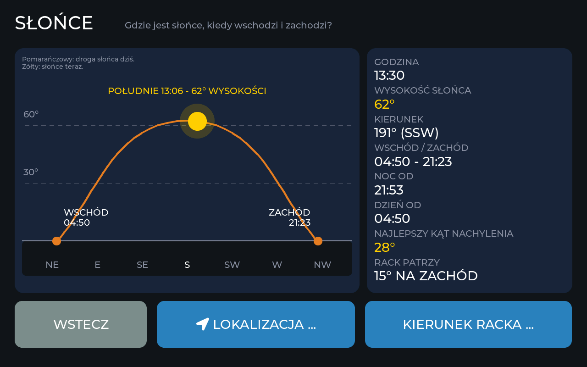
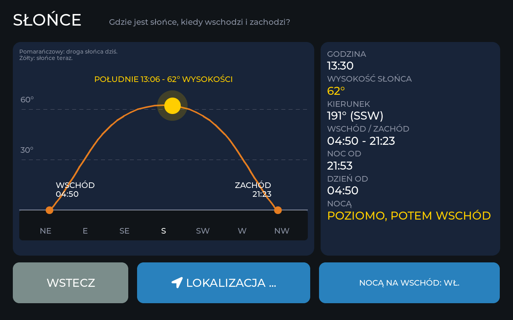
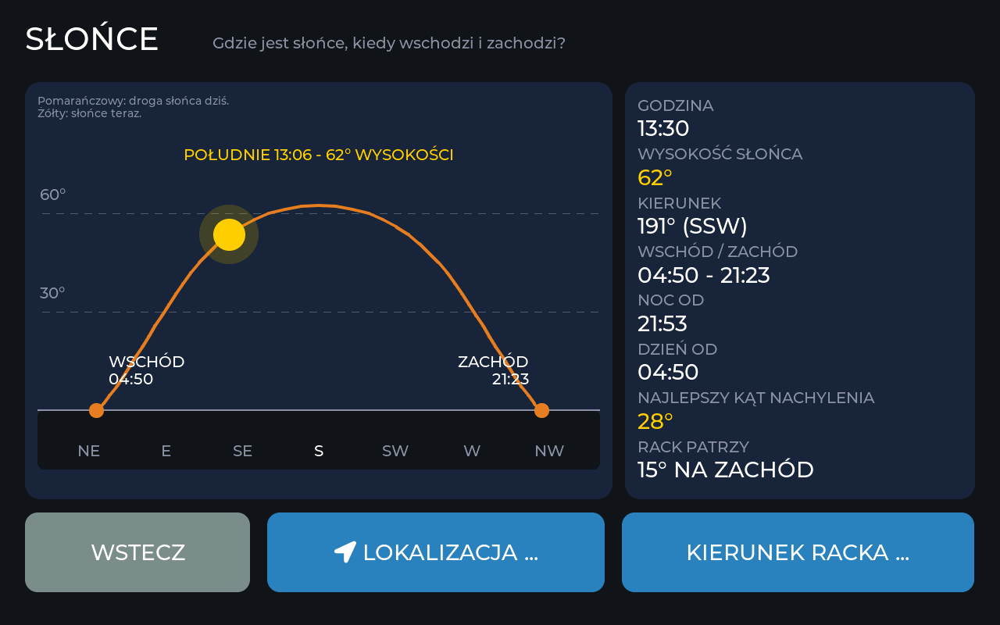
| Dane | Znaczenie |
|---|---|
| Pomarańczowa linia | Droga słońca dziś po niebie, od północnego wschodu przez południe do północnego zachodu (latem). Żółty punkt: słońce teraz. |
| POŁUDNIE | Godzina i wysokość najwyższego położenia słońca. |
| WYSOKOŚĆ SŁOŃCA, KIERUNEK | Jak wysoko (w stopniach nad horyzontem) i w jakim kierunku świata stoi teraz słońce. |
| WSCHÓD / ZACHÓD | Dziś, dla twojej lokalizacji. |
| NOC OD, DZIEŃ OD | Kiedy urządzenie jedzie do pozycji nocnej i kiedy zaczyna się dzień (z przesunięciami z 6.4). |
| NAJLEPSZY KĄT NACHYLENIA 1 oś | Które nachylenie łapie teraz najwięcej słońca, z uwzględnieniem orientacji racka. |
| RACK PATRZY 1 oś | Ustawiona orientacja (6.3). |
| NOCĄ 2 osie | Pozycja nocna: „POZIOMO, POTEM WSCHÓD” albo tylko poziomo. Przycisk NOCĄ NA WSCHÓD przełącza. |
6.2 Wpisywanie lokalizacji
Lokalizację otworzysz przyciskiem LOKALIZACJA … na stronie SŁOŃCE lub w kreatorze konfiguracji (krok 10). Dla pozycji słońca wystarcza dokładność ok. 0,1° (ok. 10 km): najbliższa miejscowość wystarczy.
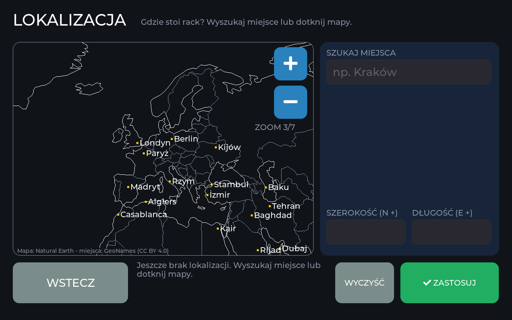
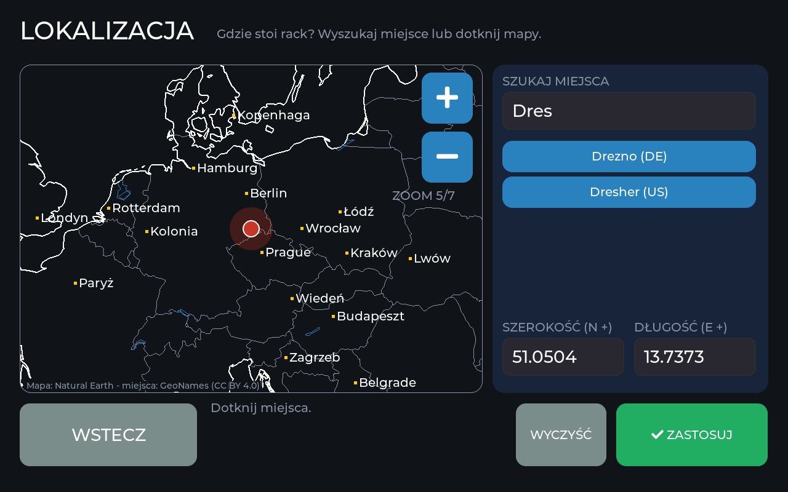
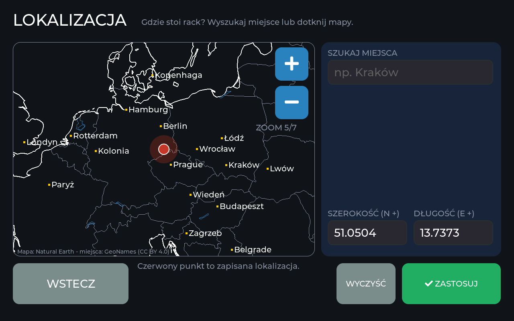
- Wyszukaj miejsce lub dotknij mapyW polu SZUKAJ MIEJSCA wpisz pierwsze litery swojej miejscowości i dotknij propozycji. Albo przyciskami + i − powiększ mapę, przesuń ją palcem i dotknij swojej miejscowości. Wynik: Szerokość i długość są w polach.
- Sprawdź lub wpisz liczbyKto zna współrzędne (na przykład z aplikacji z mapami), wpisuje je bezpośrednio: SZEROKOŚĆ (N +), DŁUGOŚĆ (E +), w stopniach dziesiętnych z kropką, na przykład 51.0504 i 13.7373. Na południe od równika szerokość jest ujemna, a na zachód od Greenwich długość. Wynik: Liczby się zgadzają.
- ZASTOSUJWynik: Czerwony punkt jest na twojej miejscowości; strona SŁOŃCE pokazuje godziny dla twojej lokalizacji.
Fabrycznie obie wartości są ustawione na 0. WYCZYŚĆ przywraca lokalizację do stanu „nie wpisano”. Mapa na wyświetlaczu jest zapisana w urządzeniu i nie potrzebuje internetu (kontury z Natural Earth, miejscowości z GeoNames). W interfejsie WWW jest dodatkowo mapa drogowa (rozdział 8).
6.3 Orientacja racka 1 oś
Rack z jedną osią nie może się obracać. Jeśli nie stoi dokładnie na południe, słońce jest dla racka „z przodu” o innych porach. Aby urządzenie liczyło prawidłowo, mówisz mu, w którą stronę patrzy twój rack. Przy dwóch osiach ta wartość odpada, bo azymut i tak podąża za słońcem.
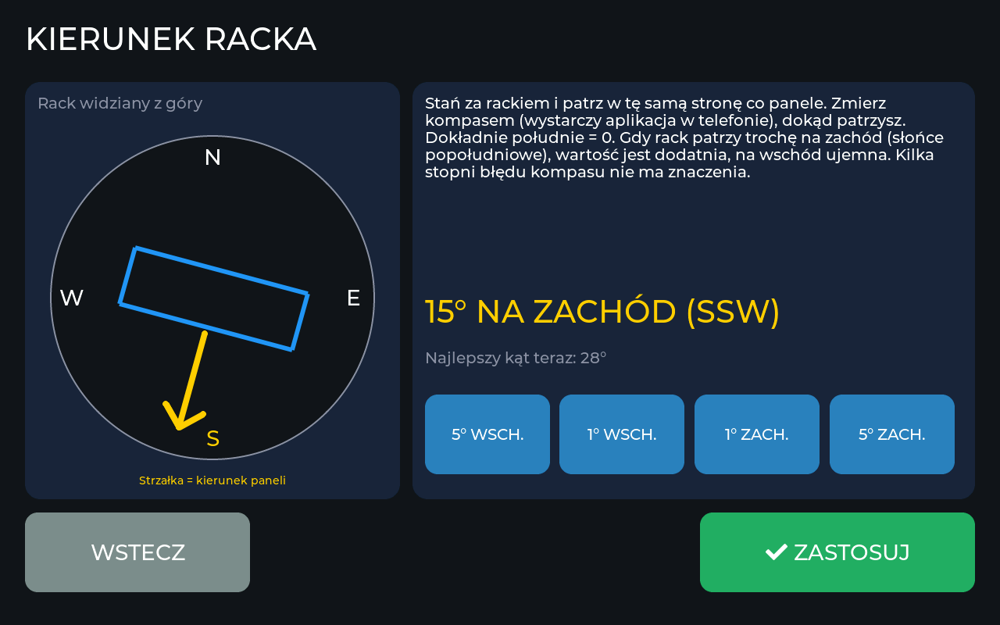
- Zmierz kierunekKompasem (wystarczy też aplikacja w telefonie) zmierz za rackiem w kierunku, w którym patrzą panele. Nie przykładaj kompasu bezpośrednio do metalu. Wynik: kierunek świata, na przykład 195° (południe-południowy zachód).
- Przelicz na wartośćWartość = kierunek kompasu − 180. Przykład: 195° − 180 = +15. Przy 165° (południe-południowy wschód) daje to −15. Wynik: liczba od −90 do +90.
- UstawStrona SŁOŃCE → KIERUNEK RACKA …, ustaw przyciskami 5° WSCH., 1° WSCH., 1° ZACH., 5° ZACH., ZASTOSUJ. Wynik: strona SŁOŃCE pokazuje „RACK PATRZY 15° NA ZACHÓD”.
Wartość zależy wyłącznie od tego, jak ustawiłeś rack. Dla racka nie ma innej wartości domyślnej niż 0 (dokładnie południe). Kilka stopni odchyłki kompasu nie ma znaczenia.
Gdy brakuje godziny lub lokalizacji
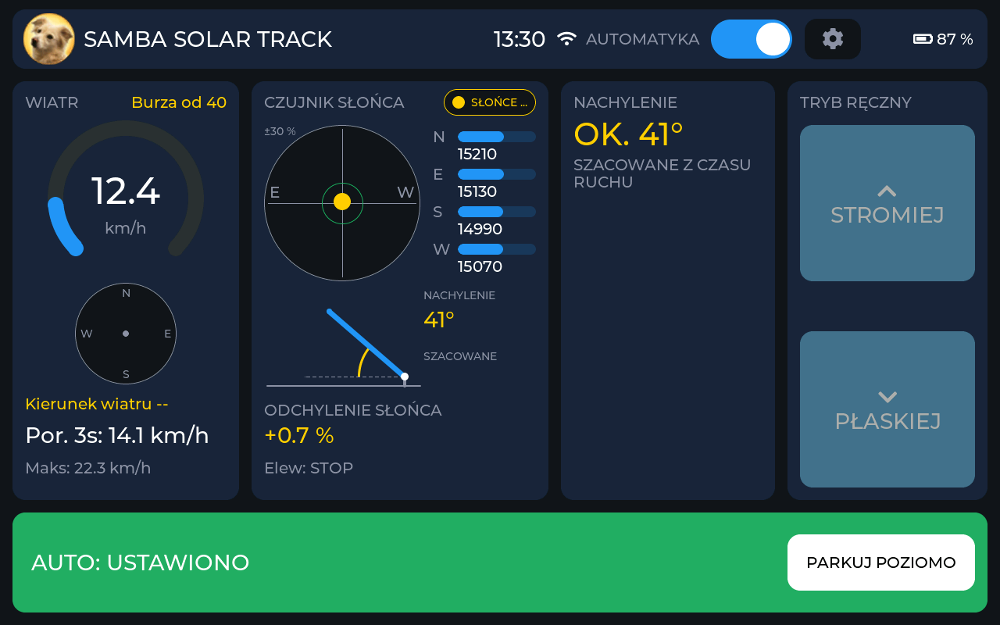
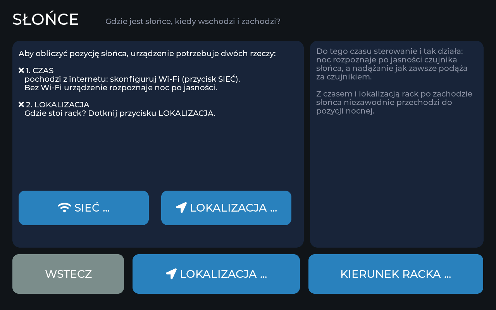
Sterownik mimo to działa w pełni: noc rozpoznaje wtedy po jasności, a śledzenie jak zawsze podąża za czujnikiem słońca.
6.4 Noc i pozycja nocna
| Co wie urządzenie | Noc zaczyna się | Dzień zaczyna się |
|---|---|---|
| Godzina i lokalizacja | zachód słońca + „Noc od zachodu słońca plus” (fabrycznie 30 min), bez czasu oczekiwania | wschód słońca − „Dzień od wschodu słońca minus” (fabrycznie 0 min) |
| Brak godziny lub lokalizacji | jasność (suma czterech stron) przez „Noc lub dzień dopiero po” (fabrycznie 5 min) poniżej „Noc poniżej jasności” (fabrycznie 4000) | tak samo długo powyżej „Dzień powyżej jasności” (fabrycznie 6000) |
1 oś Pozycja nocna
Elewacja jedzie do poziomu (pozycja 0) i pozostaje tam do rana.
2 osie Pozycja nocna
Najpierw elewacja jedzie do poziomu, potem azymut obraca się na wschód (pozycja poranna), jeśli „Nocą powrót na wschód” jest wł. (fabrycznie wł.). W przeciwnym razie azymut stoi. Obie osie nigdy nie jadą jednocześnie.
Jazda nocna to zwykły ruch ze wszystkimi funkcjami ochronnymi; czeka na przykład na koniec przerwy cyklu pracy. Burza, parkowanie i tryb ręczny mają pierwszeństwo.
6.5 Przy zachmurzeniu ruch do obliczonego kąta 1 oś fabrycznie wył.
Przy gęstym zachmurzeniu czujnik słońca nie widzi kierunku. Jeśli ten przełącznik jest wł., elewacja jedzie wtedy do obliczonego najlepszego kąta (jak przy nachyleniu na polecenie), a pasek stanu pokazuje „POCHMURNO: …”. Warunki: godzina, lokalizacja i skalibrowany czas ruchu. „Pochmurno” oznacza: suma jasności przez 5 min leży poniżej „Pochmurno poniżej jasności” (fabrycznie 20000); znów słonecznie jest powyżej 1,25-krotności tej wartości. Do nowego celu urządzenie jedzie dopiero, gdy różni się on od starego o co najmniej 3°.
Próg 20000 jest szacunkowy. W pochmurny dzień obserwuj jasność w karcie CZUJNIK SŁOŃCA (suma czterech wartości) i ustaw próg nieco wyżej (rozdział 7).
7Wszystkie ustawiane wartości
Część do sprawdzania: każda wartość w USTAWIENIA ze znaczeniem, wartością domyślną, granicami i tym, kiedy obowiązuje. Do tego zalecenie dla Samba-Solar-Rack i wskazówka, jak znaleźć właściwą wartość dla innej instalacji. Wszystkie wartości w skrócie: załącznik A.
Zalecenia dla racka pochodzą z opisu projektu (README) i dotyczą racka 2.0-E Plus ze sterownikiem synchronicznym BST-KZQ-15A-2 i bez wyłączników krańcowych na trackerze. Należy je sprawdzić z aktualną wersją instrukcji montażu na stronie internetowej. Gdzie brakuje danych, jest napisane „zmierz na własnym racku” lub „wartość domyślna”; wymiarów i czasów nie szacujemy tutaj.
Jak zmienić wartość
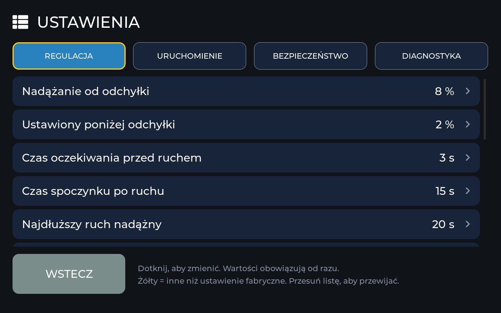

- Koło zębate → USTAWIENIA …Ten przycisk pojawia się dopiero po zapisaniu konfiguracji. Wynik: pojawia się lista grupy REGULACJA.
- Wybierz grupęREGULACJA, URUCHOMIENIE, BEZPIECZEŃSTWO lub DIAGNOSTYKA. Aby przewijać, przesuń listę. Wynik: widać wartości grupy; te zapisane na żółto różnią się od wartości domyślnej.
- Dotknij wiersza, ustaw wartość, zastosujWynik: wiersz pokazuje nową wartość. Jeśli jest poza granicami lub nie pasuje do innej wartości, urządzenie ją odrzuca i podaje powód.
| „Obowiązuje” | Znaczenie |
|---|---|
| od razu | Nowa wartość działa w następnym kroku regulacji. |
| tylko przy stojących napędach | Zmiana jest odrzucana, dopóki jakiś napęd jedzie. Odczekaj chwilę lub poczekaj na koniec PARKUJ POZIOMO, potem spróbuj jeszcze raz. |
| na wyświetlaczu od razu; zdalnie dopiero po potwierdzeniu | Jeśli wartość przychodzi z przeglądarki lub z ioBroker, wyświetlacz pokazuje pytanie ze starą i nową wartością. Dopiero ZASTOSUJ czyni ją ważną. Propozycje nie przetrwają restartu. |
Nie każda instalacja pokazuje wszystkie wartości: wartości azymutu tylko przy 2 osiach; czasy ruchu, stelaż, odczyt Halla, kąty zadane, kierunek i zachmurzenie tylko przy 1 osi; wartości kierunku wiatru tylko przy anemometrze z kierunkiem. Pokazują to oznaczenia.
BEZPIECZEŃSTWO
Wartości bezpieczeństwa chronią mechanikę i napędy. Ich granice są stałe. Po zdalnej zmianie nowa wartość obowiązuje dopiero, gdy potwierdzisz ją na wyświetlaczu (wyświetlacz pokazuje starą i nową wartość).
Próg burzy (poryw) obie stormKmh
Od tej prędkości wiatru rack jedzie do poziomu. Mierzony jest poryw: średnia z 3 sekund.
Czas trzymania po burzy obie stormHoldMs
Tak długo rack pozostaje w poziomie po ostatnim porywie powyżej progu burzy. Każdy nowy poryw uruchamia czas od nowa.
Czas martwy przy zmianie kierunku obie motorDeadtimeMs
Przerwa, zanim napęd może zmienić kierunek. Oszczędza silnik i przekładnię.
Maks. czas pracy elewacji obie motorMaxRunMsElevation
Najdłuższy dozwolony ruch bez przerwy. Z wyłącznikami krańcowymi: po jego przekroczeniu sterownik zgłasza błąd napędu. Bez wyłączników krańcowych: po jego upływie położenie krańcowe uznaje się za osiągnięte (położenie krańcowe wg czasu pracy).
Maks. czas pracy azymutu 2 osie motorMaxRunMsAzimuth
Jak wyżej, dla obrotu wschód – zachód.
URUCHOMIENIE
Co jest zamontowane w twoim racku i jak. Większość tych wartości kreator konfiguracji ustawia sam. Wartości „tylko przy stojących napędach” urządzenie odrzuca, dopóki jakiś napęd jedzie.
Wyłącznik krańcowy elewacji obie limitSwitchesElevation
Tak: do płytki są podłączone wyłączniki krańcowe (rozwierne) dla obu końców nachylenia. Nie: napęd zatrzymuje się na własnym, wbudowanym wyłączniku krańcowym; sterownik rozpoznaje koniec po maks. czasie pracy.
Wyłącznik krańcowy azymutu 2 osie limitSwitchesAzimuth
Jak wyżej, dla obrotu.
Czujnik słońca WSCHÓD / ZACHÓD / POŁUDNIE / PÓŁNOC na wejściu AIN obie sunChEast, sunChWest, sunChSouth, sunChNorth
Która żyła czujnika słońca jest na którym wejściu. Jeśli strona dostanie wejście, które ma już inna, obie się zamieniają.
Północ jaśniej oznacza W GÓRĘ obie sunNorthMeansUp
Określa, w którą stronę jedzie nachylenie, gdy strona PÓŁNOC czujnika jest jaśniejsza niż POŁUDNIE. Zależy od tego, jak czujnik jest zamontowany (założenie fabryczne: PÓŁNOC wskazuje górną krawędź modułu).
Pozycja pozioma w kierunku W GÓRĘ obie stormParkElevationPlus
W którą stronę (styk W GÓRĘ lub W DÓŁ) rack staje się płaski. Określa ruch przy burzy, parkowaniu i w nocy oraz który zacisk przełączają przyciski STROMIEJ i PŁASKIEJ.
Anemometr: baud obie windBaud
Prędkość transmisji na linii RS485 (8 bitów danych, bez parzystości, 1 bit stopu).
Anemometr: adres Modbus obie windSpeedAddr
Adres czujnika prędkości wiatru na magistrali.
Anemometr: polecenie odczytu (3 lub 4) obie windSpeedFunction
Polecenie Modbus do odczytu: 3 (Holding Register) lub 4 (Input Register).
Anemometr: rejestr obie windSpeedRegister
Numer rejestru, w którym jest prędkość wiatru.
Anemometr: m/s na jednostkę obie windSpeedScale
Przeliczenie surowej wartości na m/s. 0,1 oznacza: czujnik podaje dziesiąte części m/s (surowa wartość 86 = 8,6 m/s).
Kierunek wiatru: adres Modbus, polecenie odczytu, rejestr, ° na jednostkę obie windDirAddr, windDirFunction, windDirRegister, windDirScale
Te same dane dla czujnika kierunku (tylko przy anemometrze z kierunkiem wiatru). 0,1 stopnia na jednostkę: surowa wartość 0 do 3600 = 0° do 360°.
Czas ruchu 0 do 60° (stromiej) / 60 do 0° (płaskiej) 1 oś elevTravelSteepMs, elevTravelFlatMs
Ile czasu nachylenie potrzebuje na całą drogę. Na tej podstawie urządzenie szacuje każdy kąt (nachylenie na polecenie). Obowiązuje tylko, gdy jest krótszy niż 0,9 × maks. czas pracy.
Stelaż (nachylenie ze skoku) 1 oś elevGeometry
Jak z drogi napędu powstaje kąt. G1 i G2 to tabele racków Samba-Solar-Rack (instrukcja montażu, załącznik 16.1).
Strata rozruchowa na ruch 1 oś elevStartLossMs
Czas, który każdy napęd traci przy rozruchu i wybiegu. Poprawia szacowanie przy wielu krótkich ruchach.
Odczyt Halla obecny 1 oś elevHall
Tak: HallTapBoard przekazuje impulsy napędu do płytki (wejście J22). Wtedy urządzenie mierzy nachylenie zamiast je szacować i rozpoznaje, czy napęd naprawdę jedzie. Przy dwóch osiach pozostaje wyłączony.
Odwróć kierunek liczenia Halla 1 oś elevHallInvert
Odwraca kierunek liczenia, gdy kanały A i B są podłączone odwrotnie.
Impulsy Halla na skok 1 oś elevHallSteps
Ile impulsów Halla napęd liczy na całej drodze. Wpisuje to kalibracja (średnia z W GÓRĘ i W DÓŁ).
Reset sterownika synchr. elewacja obie syncResetElevation
Czy i gdzie podłączone jest wejście resetu (RST) sterownika synchronicznego. Niektóre sterowniki synchroniczne blokują się po zaniku prądu w trakcie ruchu, dopóki RST nie zostanie na krótko połączone z COM; wtedy całkowicie wsuwają napędy.
Reset sterownika synchr. azymut 2 osie syncResetAzimuth
Jak wyżej, dla obrotu (zacisk J23, styki 3–4).
Lokalizacja: szerokość (północ dodatnia) / długość (wschód dodatni) obie siteLatitude, siteLongitude
Gdzie stoi rack. Potrzebne do wschodu i zachodu słońca. Najwygodniej przez mapę (rozdział 6.2).
Kierunek racka (południe 0, zachód dodatni) 1 oś rackAzimuth
W którą stronę patrzą panele (rozdział 6.3).
REGULACJA
Jak automatyka śledzi słońce i kiedy jest noc. Wszystkie wartości obowiązują od razu.
Nadążanie od odchyłki obie trackStartPermille
Ruch nadążny zaczyna się dopiero wtedy, gdy czujnik słońca widzi między dwiema stronami różnicę większą niż ta.
Ustawiony poniżej odchyłki obie trackStopPermille
Poniżej tej różnicy oś uznaje się za ustawioną, ruch się kończy.
Czas oczekiwania przed ruchem obie trackStartDelayMs
Tak długo musi trwać odchyłka, zanim nastąpi ruch. Zapobiega ruchom z powodu krótkiej chmury.
Czas spoczynku po ruchu obie trackSettleMs
Przerwa po każdym ruchu nadążnym.
Najdłuższy ruch nadążny obie trackMaxMoveMs
Pojedynczy ruch nadążny kończy się najpóźniej po tym czasie.
Noc poniżej jasności (suma) obie nightEnterLevel
Tylko bez godziny lub lokalizacji: jeśli suma czterech jasności leży wystarczająco długo poniżej tej wartości, jest noc.
Dzień powyżej jasności (suma) obie nightExitLevel
Powyżej tej wartości znów jest dzień. Obowiązuje też jako minimalna jasność dla czujnika słońca i próby automatyki w kreatorze konfiguracji.
Noc lub dzień dopiero po obie nightDelayMs
Tak długo jasność musi leżeć poniżej lub powyżej progu. Dotyczy też stanu „pochmurno”.
Nocą powrót na wschód 2 osie nightReturnEast
Tak: w nocy po ruchu do poziomu azymut obraca się na wschód, aby rano instalacja była gotowa.
Noc od zachodu słońca plus obie nightAfterSunsetMin
Z godziną i lokalizacją: tyle minut po zachodzie słońca zaczyna się noc.
Dzień od wschodu słońca minus obie dayBeforeSunriseMin
Tyle minut przed wschodem słońca kończy się noc.
Przy zachmurzeniu ruch do obliczonego kąta 1 oś cloudAstro
Przy zachmurzeniu nachylenie jedzie do obliczonego najlepszego kąta (rozdział 6.5).
Pochmurno poniżej jasności (suma) 1 oś cloudLevel
Poniżej tej sumy uznaje się, że jest pochmurno (założenie, ustaw na urządzeniu).
Kąt zadany 1 / Kąt zadany 2 1 oś elevPreset1, elevPreset2
Do dwóch własnych kątów jako dodatkowe przyciski w karcie NACHYLENIE (obok 0°, 30°, 60°).
DIAGNOSTYKA
Tylko do szukania usterek.
Poziom logu (0 wył., 5 wszystko) obie logLevel
Jak szczegółowo urządzenie zapisuje log (0 wył., 1 błędy, 2 ostrzeżenia, 3 info, 4 debug, 5 wszystko).
Stałe wartości, których nie możesz ustawić
Niektóre wartości ochronne są na stałe w firmware. Warto je znać, bo wyjaśniają, dlaczego rack czasem czeka.
| Ochrona | Wartość | Co zauważysz |
|---|---|---|
| Cykl pracy: ruch bez przerwy | najwyżej 120 s | Gdy konto czasu ruchu napędu jest puste, zaczyna się przerwa. Pasek stanu pokazuje na pomarańczowo „PRZERWA (CYKL PRACY): NAPĘD WOLNY ZA mm:ss”. Po całkowitym opróżnieniu trwa ona ok. 13,5 min. Mimo to wykonywany jest tylko ruch do poziomu przy burzy, awarii anemometru i parkowaniu. |
| Cykl pracy: udział | 10 %; ponownie wolny od 90 s zaoszczędzonego konta (założenie) | |
| Ponowny ruch do poziomu przy burzy (bez wyłączników krańcowych) | co 30 min | Przy burzy i awarii anemometru elewacja regularnie ponownie jedzie do poziomu, na wypadek gdyby wcześniejszy ruch nie przyniósł skutku. |
| Ruch próbny w kreatorze konfiguracji | najwyżej 5 s | Ruch próbny PŁASKIEJ lub WSCHÓD zatrzymuje się sam. |
Wartości cyklu pracy to dane sprzedawcy dla napędów Samba-Solar-Rack (cykl pracy 10 %, 120 s bez przerwy). Inne napędy mogą znosić więcej lub mniej; w firmware 0.7.0 nie da się tego ustawić.
8Interfejs WWW: ustawianie zdalne
Gdy Wi-Fi jest połączone, możesz oglądać, obsługiwać i ustawiać instalację w przeglądarce telefonu lub komputera. Strona wygląda jak wyświetlacz. Wyświetlacz pozostaje jednak urządzeniem głównym: wszystko, co jest dostępne zdalnie, jest też na wyświetlaczu, a niektóre rzeczy tylko tam.
Podgląd i aktualizacja przez sieć zostały wypróbowane na płycie testowej (w symulacji, bez płytki). Obsługa i ustawianie zdalne nie zostały tam jeszcze wypróbowane; mapa lokalizacji, słońce i raport z testu są nowe w 0.7.0 i sprawdzone tylko na komputerze.
Otwieranie i logowanie
- Otwórz adresW tej samej sieci Wi-Fi wpisz w przeglądarce adres z ekranu SIEĆ albo
http://samba-solar-track.local. Wynik: pojawia się przegląd; bez logowania na górze widać „TYLKO PODGLĄD”. - Zaloguj sięNa telefonie zeskanuj kod QR w SIEĆ → DOSTĘP ZDALNY. Na komputerze wybierz WPISZ TOKEN i wpisz cztery bloki tokenu, które pokazuje ekran SIEĆ. Wynik: przeglądarka może obsługiwać i ustawiać; zapamiętuje logowanie.
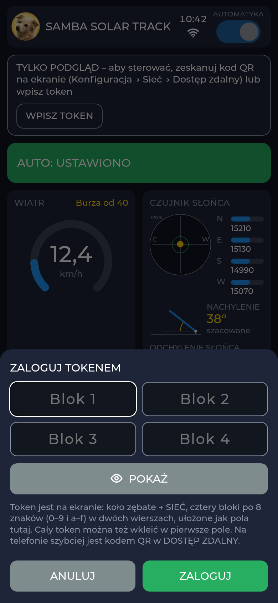


Co działa zdalnie
| Strona | Ustawienie | Jak działa |
|---|---|---|
| KONFIGURACJA | Język, motyw | od razu, na wyświetlaczu i w przeglądarce; tylko gdy na wyświetlaczu otwarty jest pulpit |
| KONFIGURACJA | Tryb pracy, anemometr | jak ZAPISZ na wyświetlaczu: napędy stają, restart po 1,5 s |
| KONFIGURACJA | Lokalizacja (mapa), kierunek racka 1 oś | od razu |
| KONFIGURACJA | Kreator konfiguracji: stan i raporty z testu (każdy POKAŻ, zapis jako PDF i TEKST) | tylko podgląd, zapis i pobieranie |
| KONFIGURACJA | Wgranie firmware lub instalacja z internetu; zakończenie symulacji | z tokenem; nie podczas burzy i nie, gdy jakiś napęd jedzie |
| USTAWIENIA | wszystkie wartości z rozdziału 7 | regulacja i uruchomienie od razu lub przy postoju; wartości bezpieczeństwa, kierunek pozycji poziomej i dane prędkości wiatru dopiero po potwierdzeniu na wyświetlaczu |
| USTAWIENIA | ZRESETUJ STEROWNIK SYNCHRONICZNY | z pytaniem w przeglądarce |
Lokalizacja i kierunek w przeglądarce
W przeglądarce jest mapa ulic (Leaflet z mapami OpenStreetMap) i wyszukiwarka miejscowości (Nominatim). Obrazy mapy pobiera z internetu twoja przeglądarka, nie urządzenie; bez internetu pola liczbowe i tak działają.
Co działa tylko na wyświetlaczu i dlaczego
| Tylko na wyświetlaczu | Dlaczego |
|---|---|
| Przejście kreatora konfiguracji | Przy każdym ruchu testowym ktoś musi stać przy racku i patrzeć. Przeglądarka pokazuje tylko postęp. |
| KALIBRACJA CZASU RUCHU 1 oś | Ten sam powód: dotykasz NA MIEJSCU, gdy rama stoi. Podczas kalibracji urządzenie odrzuca zdalne ruchy ręczne. |
| Potwierdzanie wartości bezpieczeństwa | Wartość chroniąca mechanikę nie powinna być zmieniana zdalnie niepostrzeżenie. |
| Nazwa i hasło Wi-Fi | Bez Wi-Fi nie ma przeglądarki. Alternatywnie przez hotspot konfiguracyjny (4.4). |
| Kod QR, pokazanie tokenu, ODNÓW TOKEN, blokada ZDALNE STEROWANIE | Kto stoi przy urządzeniu, decyduje, kto może sterować zdalnie. |
| Włączenie symulacji | Wymaga potwierdzenia na urządzeniu i działa tylko bez płytki. |
| Dźwięk, ekran (stan spoczynku, czujnik ruchu, akumulator) | Dotyczy tylko samego urządzenia. |
Po zablokowaniu urządzenie nie przyjmuje zdalnie żadnego polecenia, żadnej zmiany i żadnej aktualizacji firmware. Wskazania i komunikaty działają dalej. Ochrony przed burzą, wyłączników krańcowych, czasu martwego i nadzoru czasu pracy nigdy nie można zdalnie wyłączyć.
9Szukanie usterek podczas konfiguracji
Najczęstsze komunikaty i obserwacje podczas konfiguracji, z przyczyną i rozwiązaniem. Błędy okablowania omawia instrukcja okablowania (tylko po niemiecku), błędy płytki instrukcja budowy i obsługi.
| Wskazanie lub obserwacja | Przyczyna | Rozwiązanie |
|---|---|---|
| Wszystko po angielsku | Fabrycznie językiem jest angielski. | W wyborze języka dotknij POLSKI (4.1). |
| Nie można dotknąć ZAPISZ + RESTART | Nie wybrano trybu pracy lub anemometru. | Wybierz oba. |
| Brak przycisku USTAWIENIA | Konfiguracja jeszcze nie zapisana. | Najpierw ZAPISZ + RESTART. |
| GOTOWY miga, nic nie jedzie | Brak konfiguracji. | Zapisz konfigurację. |
| Fioletowy pasek „BRAK KREATORA KONFIGURACJI: AUTOMATYKA ZABLOKOWANA” | Kreator konfiguracji nie został zakończony. | Dotknij paska i kontynuuj (rozdział 5). |
| Po nałożeniu płytki: fioletowy pasek „BRAK KREATORA KONFIGURACJI”, choć kreator konfiguracji był zakończony | Został zakończony tylko w symulacji. Na prawdziwym racku zaczyna się wtedy sam od nowa. | Zamierzone. Przejdź kreator konfiguracji na racku (rozdział 5). |
| „SYMULACJA NIEMOŻLIWA” | Płytka RearCircuitBoard_10 jest nałożona. | Z płytką nie ma symulacji; to zamierzone. |
| Krok 3: pole 0x70 czerwone | Płytka nie jest prawidłowo nałożona, usterka układu. | Wyłącz zasilanie, sprawdź płytkę na listwie gniazd J8. Bez 0x70 nic nie jedzie. |
| Krok 3: 24 V lub 5 V czerwone | Zasilacz sterownika wyłączony, bezpiecznik, przetwornica. | Sprawdź zasilacz i bezpiecznik (instrukcja okablowania, tylko po niemiecku). |
| Krok 3: AKU czerwone | Blokada ładowania nieprawdopodobna. | Instrukcja budowy i obsługi, rozdział 7. |
| Krok 3: 0x72 czerwone | Wybrano reset na J23, układ nie odpowiada (płytka sprzed projektu 0.12?). | W kroku 2 ustaw reset na „wył.” lub sprawdź płytkę. |
| „Anemometr nie został jeszcze obrócony.” | Wskazanie wzrosło o mniej niż 2 km/h lub anemometr nie odpowiada. | Obróć mocniej. Jeśli nie odpowiada: linia RS485 (A/B zamienione?), zasilanie, adres i baud. |
| Kierunek wiatru nie pokazuje północy | Czujnik zamontowany obrócony lub błędne wartości. | Ustaw znacznik północy czujnika, sprawdź wartości kierunku wiatru, POWTÓRZ. |
| Przy PŁASKIEJ rack stał się bardziej stromy | Kierunek pozycji poziomej odwrotny. | Dotknij NIE: urządzenie zmienia ustawienie. POWTÓRZ. |
| Przy PŁASKIEJ nic się nie rusza | Zasilacz napędów wyłączony, styki niepodłączone, sterownik synchroniczny nie w trybie chwilowym lub zablokowany (na przykład po zaniku prądu). | Sprawdź okablowanie; przy sterowniku synchronicznym z resetem: ustaw i wyzwól reset. |
| „Błąd napędu (maks. czas pracy). Potwierdź i powtórz.” | Przy „Wyłącznik krańcowy = tak” wyłącznik krańcowy nie zadziałał przed upływem maks. czasu pracy. | Czy są wyłączniki krańcowe? Jeśli nie, ustaw na nie. W przeciwnym razie zwiększ maks. czas pracy. POTWIERDŹ, POWTÓRZ. |
| Oba kierunki zablokowane, nic nie jedzie | „Wyłącznik krańcowy = tak”, ale nie podłączono wyłączników krańcowych (otwarte wejście = położenie krańcowe). | Ustaw na nie (wyłączniki krańcowe). |
| „Napęd stoi bez krańcówki (czujnik Halla).” | Impulsy Halla ustały w połowie drogi: mechanika się zacina, napęd bez napięcia, sterownik synchroniczny przerwał. | Sprawdź mechanikę i zasilanie napędów, POWTÓRZ. |
| „Czas przejazdu nie jest jeszcze skalibrowany.” | KALIBRACJA CZASU RUCHU nie została zakończona. | Skalibruj i ZASTOSUJ. |
| Kalibracja: „MAKS. CZAS PRACY ZA KRÓTKI LUB NIE DOTKNIĘTO NA MIEJSCU” | Ruch trwał dłużej niż maks. czas pracy albo zapomniano o NA MIEJSCU. | Zwiększ maks. czas pracy, zmierz ponownie. |
| Kalibracja: „HALL LICZY WSTECZ” | Kanały A i B zamienione. | Odwróć kierunek liczenia Halla = tak. |
| Przy WSCHÓD rack obraca się na zachód | Styki WSCHÓD i ZACHÓD zamienione. | Wyłącz zasilacz, zamień wtyki na J5 i J6, POWTÓRZ. |
| „Reset niemożliwy (sprawdź podłączenie lub układ).” | Reset nie zaczął się w ciągu 20 s. | Sprawdź zacisk i ustawienie resetu. |
| „Za ciemno: … powtórz.” | Jasność poniżej progu dnia. | Przy świetle dziennym lub z jasną lampą przed czujnikiem. |
| Czujnik słońca: strona nie zostaje rozpoznana | Cień za mały (mniej niż 25 % ciemniej) lub zbyt krótki. | Ręka bliżej, cień na całą stronę, trzymaj 1 s. |
| „Brak godziny: skonfiguruj WiFi lub pomiń.” | Wi-Fi wyłączone lub serwer czasu nieosiągalny. | Skonfiguruj Wi-Fi (4.4) lub POMIŃ. |
| Godzina błędna o jedną lub kilka godzin | Błędna strefa czasowa. | SIEĆ → GODZINA → PROPOZYCJE. |
| „Brak lokalizacji: wpisz ją lub pomiń.” | Szerokość i długość wynoszą 0. | Wpisz lokalizację (6.2). |
| Wschód i zachód słońca nie pasują do twojej miejscowości | Szerokość i długość zamienione lub błędny znak. | Szerokość = północ, długość = wschód; sprawdź. |
| Próba automatyki: „Kierunek został zmieniony. Proszę jeszcze raz.” | Automatyka odjechała od słońca. | POWTÓRZ; urządzenie już poprawiło wartość. |
| „Automatyka nie ustawiła się. Czy jest dość słońca?” | Po 3 min nie ustawiono. | Powtórz przy słońcu; czy czujnik jest wolny od cienia? |
| „Burza: rack ustawia się płasko. Potem powtórz.” | Poryw powyżej progu burzy. | Poczekaj na koniec burzy i czasu trzymania, POWTÓRZ. |
| Pomarańczowe „PRZERWA (CYKL PRACY) …” | Konto czasu ruchu napędu puste. | Czekaj; pozostały czas jest pokazany obok (rozdział 7). |
| Wartość zostaje odrzucona | Poza granicami, nie pasuje do innej wartości lub jakiś napęd jedzie. | Przeczytaj powód; przy „tylko przy stojących napędach” odczekaj chwilę. |
| Przeglądarka: zmiana nie zostaje przyjęta | Nie zalogowano, ZDALNE STEROWANIE zablokowane lub na wyświetlaczu nie jest otwarty pulpit (język, motyw). | Zaloguj się, zdejmij blokadę na wyświetlaczu, wróć na wyświetlaczu do pulpitu. |
10Pojęcia wyjaśnione prosto
- Oś
- Kierunek, w którym rack może się poruszać. Elewacja = nachylenie, azymut = obrót.
- Automatyka
- Sterownik sam prowadzi rack za słońcem, w nocy jedzie do pozycji nocnej, a rano z powrotem. Przełącznik AUTOMATYKA w nagłówku.
- Azymut
- Obrót ze wschodu na zachód, tylko przy 2 osiach. Także: kierunek słońca na niebie w stopniach.
- Poryw
- Tutaj: średnia prędkość wiatru z 3 sekund. Jeśli leży powyżej progu burzy, jest burza.
- Stopnie dziesiętne
- Zapis szerokości i długości z miejscami po przecinku, na przykład 51.0504 zamiast 51° 3′ 1″.
- Kalibracja
- Urządzenie mierzy czas ruchu (a z odczytem Halla także impulsy Halla) na całej drodze nachylenia. Tylko przy 1 osi.
- Cykl pracy
- Jak długo napęd może pracować w stosunku do przerwy, aby się nie przegrzać. Tutaj 10 % i najwyżej 120 s bez przerwy.
- Konfiguracja
- Ekran z trybem pracy i anemometrem. Bez zapisanej konfiguracji żaden napęd nie jedzie.
- Elewacja
- Nachylenie modułu między płasko a stromo.
- Położenie krańcowe
- Koniec drogi ruchu w jednym kierunku.
- Wyłączniki krańcowe
- Wyłącznik na końcu drogi ruchu, który otwiera się po jej osiągnięciu (rozwierny, NC). Otwarty oznacza dla sterownika: kierunek zablokowany.
- Pozycja pozioma
- Płaskie położenie modułu. Jednocześnie pozycja burzowa i pozycja nocna (pozycja 0).
- Stelaż G1, G2
- Wersje konstrukcyjne racków Samba-Solar-Rack. Określają, jak z drogi napędu powstaje kąt.
- Odczyt Halla, impulsy Halla
- Wiele napędów ma czujnik Halla, który podczas ruchu daje impulsy. HallTapBoard przekazuje je do płytki. Impuls Halla to jedno zliczone zbocze tych impulsów.
- Czas trzymania
- Tak długo rack pozostaje w poziomie po ostatnim porywie burzy.
- Tryb ręczny
- Automatyka wył.: rack jedzie tylko wtedy, gdy przytrzymujesz przycisk ruchu.
- Maksymalny czas pracy
- Najdłuższy dozwolony ruch bez przerwy. Bez wyłączników krańcowych sterownik rozpoznaje po nim położenie krańcowe.
- Hotspot
- Własna, tymczasowa sieć Wi-Fi urządzenia, aby telefonem wpisać dane Wi-Fi.
- Położenie krańcowe wg czasu pracy
- Bez wyłączników krańcowych: po upływie całego maks. czasu pracy bez przerwy położenie krańcowe uznaje się za osiągnięte.
- Modbus, RS485
- Sposób, w jaki anemometr komunikuje się z płytką przez dwie żyły. Każdy czujnik na magistrali ma adres.
- NTP, serwer czasu
- Usługa w internecie, z której urządzenie pobiera dokładną godzinę.
- Pozycja 0
- Pozycja nocna: elewacja w poziomie.
- Próba automatyki
- Ostatni krok testowy kreatora konfiguracji: automatyka musi z powrotem obrócić przestawiony rack do słońca.
- Raport z testu
- Raport ze wszystkimi wynikami i wartościami pomiarowymi kreatora konfiguracji, w interfejsie WWW jako zaprojektowany arkusz (PDF) lub plik tekstowy; trzy ostatnie pozostają w urządzeniu.
- Reset sterownika synchronicznego
- Krótkie zwarcie styków RST i COM, którym niektóre sterowniki synchroniczne odblokowują się po błędzie; przy tym całkowicie wsuwają napędy.
- Kreator
- Prowadzone sprawdzenie całej instalacji po konfiguracji. Dopiero potem automatyka jest odblokowana.
- Symulacja
- Praca bez płytki z symulowanym rackiem, tylko do wypróbowania.
- Czujnik słońca
- Czujnik z czterema stronami (wschód, zachód, południe, północ). Z różnicy jasności sterownik rozpoznaje, gdzie jest słońce.
- Próg burzy
- Prędkość wiatru, od której rack jedzie do poziomu.
- Sterownik synchroniczny
- Urządzenie sterujące, które sprawia, że dwa napędy jednej osi jadą dokładnie tak samo szybko (na przykład BST-KZQ-15A-2). Płytka „naciska” jego przyciski.
- Token
- Tajny klucz z 32 znaków. Kto go ma, może obsługiwać zdalnie.
- Czas martwy
- Przerwa przed zmianą kierunku.
- Interfejs WWW
- Strona obsługi w przeglądarce telefonu lub komputera, w domowej sieci Wi-Fi.
11Załącznik
A. Wszystkie wartości w skrócie
Obowiązuje: „od razu”, „postój” = tylko przy stojących napędach, „potwierdzenie¹” = na wyświetlaczu od razu, zdalnie dopiero po potwierdzeniu na wyświetlaczu. Osie: 1 = tylko 1 oś, 2 = tylko 2 osie, 1+2 = obie. Kolumna Samba-Solar-Rack: forma skrócona, szczegóły w rozdziale 7. Szczegóły i zalecenia dla innych racków: kliknij nazwę.
| Wartość (wyświetlacz) | Osie | Ustawienie domyślne | Dozwolone | Obowiązuje | Samba-Solar-Rack |
|---|---|---|---|---|---|
| BEZPIECZEŃSTWO | |||||
| Próg burzy (poryw) | 1+2 | 40 km/h | 20 do 60 km/h | potwierdzenie¹ | 40 km/h |
| Czas trzymania po burzy | 1+2 | 10 min | 5 do 60 min | potwierdzenie¹ | 10 min |
| Czas martwy przy zmianie kierunku | 1+2 | 500 ms | 300 do 5000 ms | potwierdzenie¹ | 500 ms |
| Maks. czas pracy elewacji | 1+2 | 60 s | 5 do 300 s | potwierdzenie¹ | 90 s |
| Maks. czas pracy azymutu | 2 | 90 s | 5 do 300 s | potwierdzenie¹ | – |
| URUCHOMIENIE | |||||
| Wyłącznik krańcowy elewacji | 1+2 | tak | tak / nie | postój | nie |
| Wyłącznik krańcowy azymutu | 2 | tak | tak / nie | postój | – |
| Czujnik słońca WSCHÓD / ZACHÓD / POŁUDNIE / PÓŁNOC na wejściu AIN | 1+2 | WSCHÓD AIN0, ZACHÓD AIN1, POŁUDNIE AIN2, PÓŁNOC AIN3 | AIN0 do AIN3, każda strona inne wejście | postój | Kreator |
| Północ jaśniej oznacza W GÓRĘ | 1+2 | tak | tak / nie | postój | Kreator |
| Pozycja pozioma w kierunku W GÓRĘ | 1+2 | tak | tak / nie | potwierdzenie¹ | Kreator |
| Anemometr: baud | 1+2 | 9600 baud | 1200 do 115200 | potwierdzenie¹ | 9600 |
| Anemometr: adres Modbus | 1+2 | 3 | 1 do 247 | potwierdzenie¹ | 3 |
| Anemometr: polecenie odczytu (3 lub 4) | 1+2 | 3 | 3 lub 4 | potwierdzenie¹ | 3 |
| Anemometr: rejestr | 1+2 | 0 | 0 do 65535 | potwierdzenie¹ | 0 |
| Anemometr: m/s na jednostkę | 1+2 | 0,1 | 0,001 do 10 | potwierdzenie¹ | 0,1 |
| Kierunek wiatru: adres Modbus, polecenie odczytu, rejestr, ° na jednostkę | 1+2 | 4 · 3 · 0 · 0,1 | 1–247 · 3/4 · 0–65535 · 0,001–10 | od razu | 4 · 3 · 0 · 0,1 |
| Czas ruchu 0 do 60° (stromiej) / 60 do 0° (płaskiej) | 1 | 0 = nieskalibrowany | 0 lub 10 do 300 s | postój | skalibrować |
| Stelaż (nachylenie ze skoku) | 1 | liniowo | liniowo · G1 (2.0-D, 2.0-E) · G2 (2.0-E Plus, 2.1, 2.1 Plus) | postój | G2 (2.0-E Plus) |
| Strata rozruchowa na ruch | 1 | 0 ms | 0 do 3000 ms | postój | 0 ms |
| Odczyt Halla obecny | 1 | nie | tak / nie | postój | tak, z HallTapBoard |
| Odwróć kierunek liczenia Halla | 1 | nie | tak / nie | postój | nie |
| Impulsy Halla na skok | 1 | 0 = nieskalibrowany | 0 lub 1000 do 2000000 | postój | skalibrować |
| Reset sterownika synchr. elewacja | 1+2 | wył. | wył. · J23 · J5 (J5 tylko przy 1 osi) | postój | J23 |
| Reset sterownika synchr. azymut | 2 | wył. | wył. · J23 | postój | – |
| Lokalizacja: szerokość (północ dodatnia) / długość (wschód dodatni) | 1+2 | 0 / 0 = nie wpisano | szerokość −90 do 90, długość −180 do 180 stopni | od razu | twoja miejscowość |
| Kierunek racka (południe 0, zachód dodatni) | 1 | 0° | −90 do 90 stopni, pełne stopnie | od razu | zmierzyć |
| REGULACJA | |||||
| Nadążanie od odchyłki | 1+2 | 8 % | 3 do 30 % | od razu | Ustawienie domyślne |
| Ustawiony poniżej odchyłki | 1+2 | 2 % | 0,5 do 10 %, zawsze mniej niż „Nadążanie od” | od razu | Ustawienie domyślne |
| Czas oczekiwania przed ruchem | 1+2 | 3 s | 0 do 60 s | od razu | Ustawienie domyślne |
| Czas spoczynku po ruchu | 1+2 | 15 s | 0 do 600 s | od razu | Ustawienie domyślne |
| Najdłuższy ruch nadążny | 1+2 | 20 s | 1 do 120 s | od razu | Ustawienie domyślne |
| Noc poniżej jasności (suma) | 1+2 | 4000 | 0 do 100000 | od razu | Ustawienie domyślne |
| Dzień powyżej jasności (suma) | 1+2 | 6000 | 0 do 130000, zawsze więcej niż próg nocy | od razu | Ustawienie domyślne |
| Noc lub dzień dopiero po | 1+2 | 5 min | 10 s do 60 min | od razu | Ustawienie domyślne |
| Nocą powrót na wschód | 2 | tak | tak / nie | od razu | – |
| Noc od zachodu słońca plus | 1+2 | 30 min | 0 do 180 min | od razu | Ustawienie domyślne |
| Dzień od wschodu słońca minus | 1+2 | 0 min | 0 do 180 min | od razu | Ustawienie domyślne |
| Przy zachmurzeniu ruch do obliczonego kąta | 1 | nie | tak / nie | od razu | według uznania |
| Pochmurno poniżej jasności (suma) | 1 | 20000 | 0 do 130000 | od razu | według uznania |
| Kąt zadany 1 / Kąt zadany 2 | 1 | 0 = wył. | 0 lub 1 do 59°, nie 30, nie podwójnie | od razu | według uznania |
| DIAGNOSTYKA | |||||
| Poziom logu (0 wył., 5 wszystko) | 1+2 | 4 | 0 do 5 | do restartu | Ustawienie domyślne |
B. Moje wartości (do wydruku)
Wpisz tutaj, co ustawiłeś i zmierzyłeś w swojej instalacji. Wartości pomiarowe kreatora konfiguracji są też w raporcie z testu.
| Dane | Moja wartość | Data |
|---|---|---|
| Tryb pracy (1 lub 2 osie), anemometr | ||
| Wyłącznik krańcowy elewacji / azymutu | ||
| Maks. czas pracy elewacji / azymutu | ||
| Zmierzony czas ruchu stromiej / płaskiej | ||
| Czas ruchu wschód / zachód / z powrotem na wschód (2 osie) | ||
| Impulsy Halla na skok | ||
| Odczytany kąt przy 30° (1 oś) | ||
| Pozycja pozioma w kierunku W GÓRĘ (tak/nie) | ||
| Lokalizacja szerokość / długość | ||
| Kierunek racka (1 oś) | ||
| Jasność (suma) o zmierzchu / przy zachmurzeniu | ||
| Nazwa urządzenia, adres w sieci Wi-Fi |
C. Założenia i otwarte punkty
| Punkt | Stan |
|---|---|
| Firmware 0.7.0 z kreatorem konfiguracji, pozycją słońca i lokalizacją | testowane tylko na komputerze i w symulacji, nie na racku |
| Wartości graniczne kreatora konfiguracji (czasy ruchu, impulsy Halla, kąty) | brak; zostaną ustalone na racku po dostawie napędów (E-S3) |
| Pozycja 0 = pozycja pozioma (kierunek burzowy) | Założenie dla wszystkich wariantów napędów |
| Położenie montażowe czujnika słońca (PÓŁNOC do górnej krawędzi) | Założenie; kreator konfiguracji poprawia kierunek |
| Próg „pochmurno” 20000 | Założenie, ustaw na urządzeniu |
| Reset sterownika synchronicznego: impuls 5 s, zachowanie potem | Założenie, zmierz na racku |
| Odblokowanie cyklu pracy po 90 s zaoszczędzonego konta | Założenie, sprawdź na racku |
| Maks. czas pracy 90 s i stelaż G2 dla racka 2.0-E Plus | z README; sprawdź z aktualną instrukcją montażu |
| Stelaż „liniowo” dla innych racków | Założenie |
D. Dalsze dokumenty
- Instrukcja budowy i obsługi (
index.html): płytka, czujniki, firmware, obsługa. - Instrukcja okablowania (
verkabelung.html, tylko po niemiecku): wszystkie przewody. - Instrukcja montażu Samba-Solar-Rack: strona internetowa i sklep.
12Licencja i prawa autorskie
Samba Solar Track możesz zbudować dla siebie. Nikt nie może na tym zarabiać bez zgody.
© Silvio Sternitzke, 11/2026. Ta instrukcja konfiguracji i ustawień, jak cały projekt, jest objęta licencją Creative Commons Uznanie autorstwa – Użycie niekomercyjne – Na tych samych warunkach 4.0 Międzynarodowe, w skrócie CC BY-NC-SA 4.0.
Dozwolone
Budowa do celów prywatnych. Kopiowanie, rozpowszechnianie i zmienianie, o ile nie odbywa się w celach komercyjnych.
Warunki
Podaj autora i licencję. Zmienione wersje rozpowszechniaj tylko na tej samej licencji.
Zabronione
Każde komercyjne wykorzystanie przez innych.
Wiążący jest tekst licencji w pliku LICENSE, niemieckie streszczenie jest w LIZENZ.md. Samba-Solar-Rack i akcesoria nie należą do Samba Solar Track; ta instrukcja tylko je wymienia.
Źródła map i miejscowości
| Co | Źródło | Licencja |
|---|---|---|
| Kontury krajów i wybrzeży na mapie na wyświetlaczu | Natural Earth | domena publiczna |
| Nazwy miejscowości w wyszukiwarce na wyświetlaczu | GeoNames | CC BY 4.0 |
| Wyświetlanie mapy w interfejsie WWW | Leaflet 1.9.4 (zawarty w urządzeniu) | BSD-2-Clause |
| Obrazy mapy i wyszukiwarka miejscowości w interfejsie WWW | OpenStreetMap (kafelki), Nominatim; pobiera przeglądarka z internetu | © współtwórcy OpenStreetMap, ODbL |
Dokumenty są udostępniane bez gwarancji. Budowa, konfiguracja i eksploatacja odbywają się na własną odpowiedzialność.
13Historia zmian
Co zmieniło się w tej instrukcji, najnowsza zmiana na początku.
| Wydanie | Data | Zmiana |
|---|---|---|
| 0.7.6 | 11/2026 | Raport z testu: w interfejsie WWW POKAŻ jako zaprojektowany arkusz (jasny lub ciemny) i ZAPISZ JAKO PDF, obok TEKST; obraz strony FIRMWARE z 0.7.6. |
| 0.7.0 | 11/2026 | Pierwsze wydanie dla firmware 0.7.0: konfiguracja na wyświetlaczu, kreator konfiguracji dla jednej i dwóch osi, lokalizacja, kierunek, słońce i noc, wszystkie ustawiane wartości z zaleceniami dla Samba-Solar-Rack i innych racków, interfejs WWW, szukanie usterek. Firmware testowany tylko na komputerze. |